Semana 8. Consumo de APIs: fetch, async/await y DevTools
| Asignatura | Programación Web (IF2003) |
| Grupo | 603 de Ingeniería Informática |
| Unidad | Unidad 2. Frontend |
Presentación interactiva de la sesión
1 Lo que vas a lograr
Hasta la semana pasada, el panel del productor de tu proyecto mostraba productos escritos a mano en un arreglo de JavaScript. Funcionaba, pero ningún productor real escribe su catálogo dentro del código: los datos viven en un servidor y el frontend los pide. Esta semana el panel deja de usar datos de mentira y pasa a pedir su catálogo a una API: una lista de productos con nombre, precio en pesos colombianos, cantidad y categoría. El backend propio del proyecto, en ASP.NET Core, llega en las Semanas 10 a 13. Mientras tanto usas una API pública que se comporta como lo hará tu backend.
El tema parece pequeño (una función llamada fetch), pero detrás hay tres ideas que casi nadie entiende a la primera: cómo viaja una petición por la red, por qué JavaScript no se queda esperando la respuesta y qué pasa cuando algo sale mal. La guía enseña esas tres ideas desde su raíz, para que puedas razonar cuando un error no se parezca a ninguno de los ejemplos.
Al terminar la guía sabes:
- Describir qué viaja en una petición y en una respuesta HTTP, y leer un código de estado.
- Explicar qué es una API, qué es JSON y cómo pasar de texto JSON a un objeto y de vuelta.
- Predecir el orden de salida de código asíncrono usando la pila, las colas y el bucle de eventos.
- Usar promesas,
fetchyasync/await, y manejar los errores quefetchno avisa por sí solo. - Mostrar en la interfaz los cuatro estados de una carga: cargando, éxito, vacío y error.
- Explicar CORS, pintar datos externos sin abrir una puerta a XSS y no poner secretos en el frontend.
- Diagnosticar una petición fallida con la pestaña Network de DevTools.
- Integrar el panel del productor con una API pública, con una capa
api.jsque lo aísla de ella.
Cada parte plantea un problema del proyecto y te pide predecir antes de abrir la respuesta.
Necesitas el panel del productor de la Semana 7 (HTML, CSS y JavaScript con DOM, map, filter y find) y el editor que usas en el curso. Esta semana no puedes abrir tus archivos con doble clic: fetch y los módulos de JavaScript no funcionan desde una dirección file://, porque el navegador los trata como origen inseguro. Sirve la carpeta con una de estas dos formas:
- La extensión Live Server de VS Code: clic derecho sobre
index.htmly Open with Live Server. - El servidor de Python, desde una terminal dentro de la carpeta del proyecto:
python -m http.server 8921y luego abrehttp://localhost:8921.
Para abrir DevTools pulsa F12 (o clic derecho, Inspeccionar) en Chrome o Edge. Esta semana usas dos pestañas: Console y Network. En Network marca Preserve log para que la lista no se borre al recargar, y deja el filtro en Fetch/XHR cuando quieras ver solo las peticiones de tu JavaScript.
2 Parte 1. La red por dentro
El problema
El panel del productor necesita su catálogo. Ese catálogo vive en otro computador, quizá al otro lado del mundo. Antes de escribir una línea de JavaScript conviene saber qué significa “pedirle algo a otro computador”, porque cada error que verás esta semana nace en uno de los pasos de ese viaje.
Escribes https://dummyjson.com/products?limit=3 en la barra del navegador y pulsas Enter. Sin leer más, escribe en una hoja qué cosas crees que ocurren entre el Enter y el momento en que ves el resultado. ¿Quién habla primero? ¿Qué se envía? ¿Qué vuelve?
El navegador (el cliente) abre una conexión con el computador que atiende en dummyjson.com (el servidor) y le envía un mensaje de texto con lo que quiere: la petición. El servidor lee esa petición, decide qué hacer y devuelve otro mensaje de texto: la respuesta. Habla primero siempre el cliente. Un servidor jamás te escribe por su cuenta; solo contesta. Esa conversación se llama protocolo HTTP.
Modelo mental: cliente y servidor
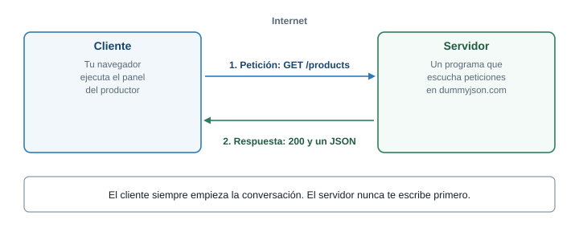
Todo el consumo de APIs es esta conversación de dos mensajes, repetida muchas veces.
Un cliente es cualquier programa que pide algo: tu navegador, una app móvil, o un script de Node. Un servidor es un programa que está encendido todo el tiempo, esperando peticiones en una dirección. Los dos se comunican con mensajes de texto con un formato fijo, y eso es lo que hace posible que un frontend escrito con HTML y JavaScript hable con un backend escrito en ASP.NET Core: no necesitan conocer el lenguaje del otro, solo el formato del mensaje.
Anatomía de una URL
La dirección que escribes tiene partes, y cada una responde una pregunta distinta.
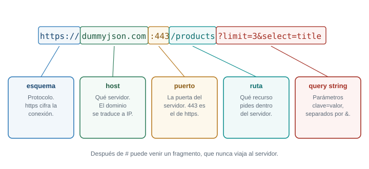
| Parte | En el ejemplo | Qué responde |
|---|---|---|
| Esquema | https:// |
Con qué protocolo hablamos. https es HTTP cifrado |
| Host | dummyjson.com |
A qué servidor le hablamos |
| Puerto | :443 |
Por cuál puerta. Con https se omite porque 443 es el valor por defecto |
| Ruta | /products |
Qué recurso queremos dentro de ese servidor |
| Query string | ?limit=3&select=title |
Parámetros opcionales, como clave=valor separados por & |
El query string merece atención porque lo usarás mucho: sirve para pedir “solo tres productos” (limit=3) o “solo estos campos” (select=title) sin que el servidor tenga una ruta distinta para cada combinación. Los caracteres especiales (espacios, tildes, &) tienen que ir codificados. Para construir una URL con parámetros sin equivocarte, JavaScript trae la clase URL:
const url = new URL("https://dummyjson.com/products/search");
url.searchParams.set("q", "miel de abeja");
console.log(url.href);https://dummyjson.com/products/search?q=miel+de+abejasearchParams.set codificó los espacios como + por ti. Si armas la URL pegando textos con +, un & dentro del dato rompe la petición sin avisar.
La petición y la respuesta HTTP
Un mensaje HTTP tiene tres zonas: una línea inicial, unos encabezados y, a veces, un cuerpo.
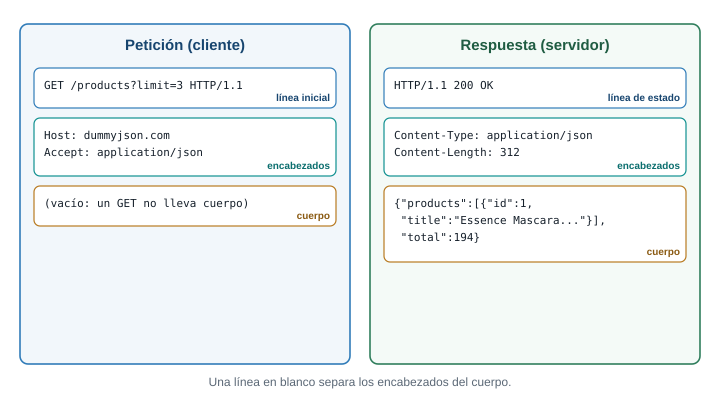
- La línea inicial de la petición dice el método y la ruta (
GET /products?limit=3). La de la respuesta trae el código de estado (200 OK). - Los encabezados son pares
nombre: valorcon información sobre el mensaje: qué formato tiene el cuerpo (Content-Type), qué formato acepta el cliente (Accept), cuánto pesa, qué origen pregunta, etc. - El cuerpo es el contenido. Un
GETno lleva cuerpo: solo pide. UnPOSTsí lo lleva: ahí viaja el producto nuevo. La respuesta de unGET /productslleva el catálogo en el cuerpo.
Métodos y el ciclo crear, leer, actualizar y borrar
El método declara la intención de la petición. Las cuatro operaciones básicas de cualquier aplicación con datos tienen un método habitual:
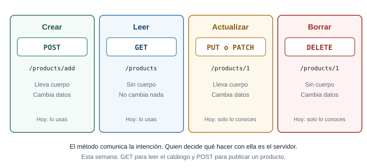
| Operación | Método | Ejemplo | Cambia datos |
|---|---|---|---|
| Crear | POST |
POST /products/add con el producto en el cuerpo |
Sí |
| Leer | GET |
GET /products |
No |
| Actualizar | PUT o PATCH |
PUT /products/1 con los campos nuevos |
Sí |
| Borrar | DELETE |
DELETE /products/1 |
Sí |
Que GET no cambie datos es una promesa que el resto de la web da por cierta. Los navegadores guardan en caché las respuestas de GET, los buscadores los repiten, y un enlace puede volver a ejecutarlo. Por eso nunca se borra o se crea algo con un GET.
Códigos de estado
El servidor resume el resultado en un número de tres cifras. La primera cifra es la que importa para razonar:
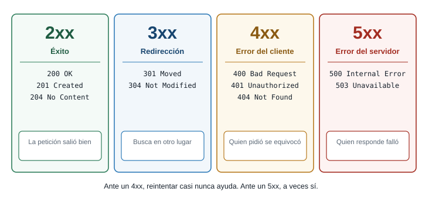
La división útil es quién se equivocó. En un 4xx la petición estaba mal (ruta que no existe, dato inválido, falta de permiso): repetirla igual dará el mismo error. En un 5xx la petición estaba bien y el servidor falló: repetirla más tarde puede funcionar. Esa distinción gobierna la estrategia de reintentos de la Parte 7.
Los más frecuentes: 200 OK, 201 Created (se creó el recurso), 204 No Content (salió bien y no hay cuerpo), 400 Bad Request, 401 Unauthorized (falta autenticación), 403 Forbidden (estás autenticado, pero no tienes permiso), 404 Not Found, 500 Internal Server Error y 503 Service Unavailable. No se memorizan: se reconocen por familia.
Mira una petición real
Abre el navegador, abre DevTools en la pestaña Network, deja marcado Preserve log y escribe en la barra de direcciones: https://dummyjson.com/products?limit=2&select=title,price. Haz clic en la petición que aparece y revisa las pestañas Headers y Response. Verás la línea de estado, los encabezados y el cuerpo con exactamente la estructura del diagrama. En Headers, dentro de Response Headers, localiza content-type: dice application/json; charset=utf-8. Ese encabezado es la forma en que el servidor avisa “lo que sigue es JSON”.
Para cada petición, di el método, el esquema, el host, la ruta y los parámetros, y qué esperas de la respuesta:
https://dummyjson.com/products/7?select=titlehttps://dummyjson.com/products/search?q=phone&limit=2POST https://dummyjson.com/products/addcon cuerpo{"title":"Miel"}
GET(si no dices método en el navegador, esGET), esquemahttps, hostdummyjson.com, ruta/products/7y parámetroselect=title. Espera un200con el producto 7 solo con los camposidytitle.GET, ruta/products/search, parámetrosq=phoneylimit=2. Espera un200con un objeto que incluye una lista con dos productos que coinciden con “phone”.POST, ruta/products/add, sin parámetros. Lleva cuerpo JSON. Espera una respuesta con el producto creado y unidnuevo. En esta API de práctica el producto no queda guardado de verdad.
El navegador agrega solo muchos encabezados que tú nunca escribiste (Host, User-Agent, Accept-Language). ¿Por qué crees que no le dejan a JavaScript cambiar algunos, como Origin?
Si cualquier página pudiera falsificar Origin, un sitio malicioso podría hacerse pasar por tu panel ante el servidor, y el servidor no tendría forma de distinguirlos. El navegador es quien garantiza ese dato, y por eso JavaScript no puede modificarlo. Vuelve a esta idea en la Parte 8.
Conexión con el proyecto
Cuando el backend ASP.NET exista, tu panel hablará con él con estas mismas piezas: GET /api/productos para leer el catálogo, POST /api/productos para publicar uno, códigos 4xx cuando el dato sea inválido (RN-01) y 5xx cuando algo falle del lado del servidor. Lo que aprendas hoy con una API pública se traslada casi sin cambios.
3 Parte 2. Qué es una API y qué es JSON
El problema
El servidor responde con un cuerpo. Ese cuerpo no puede ser “una lista de JavaScript”, porque el servidor puede estar escrito en C#, Python o Java, y esos lenguajes no comparten estructuras. Hace falta un formato de texto que todos entiendan.
Una función de JavaScript puede devolver un objeto { nombre: "Tomate", precio: 4500 }. Un servidor en C# quiere enviarle ese mismo dato a tu navegador por la red. ¿Qué viaja por el cable: el objeto, o otra cosa? ¿Qué problemas tendría enviar el objeto tal cual?
Por el cable solo viajan bytes, es decir, texto. Un objeto de memoria no se puede enviar: es un conjunto de referencias dentro de un programa en ejecución, y el programa del otro lado no lo entendería. Hay que convertir el dato en una cadena de texto con un formato acordado (serializar) y, al llegar, reconstruirlo (deserializar). Ese formato acordado, hoy el más usado, es JSON.
Qué es una API
Una API (interfaz de programación de aplicaciones) es un contrato entre programas: dice qué rutas existen, qué hay que enviar a cada una y qué devuelve. Una API web publica ese contrato en HTTP. No importa cómo está escrito el servidor por dentro; mientras respete el contrato, tu frontend funciona. Esa es la razón por la que esta semana puedes trabajar con una API pública y la próxima vez cambiarla por tu backend con pocos cambios.
El contrato de la API que usas en esta guía, dummyjson.com, incluye entre otras estas rutas:
| Ruta | Qué hace |
|---|---|
GET /products |
Lista productos. Acepta limit, skip y select |
GET /products/{id} |
Un producto por su id |
GET /products/search?q=... |
Productos cuyo texto coincide |
POST /products/add |
Simula crear un producto (no lo guarda de verdad) |
GET /http/{codigo} |
Responde con ese código de estado, útil para practicar errores |
Cada producto trae, entre otros, id, title, price (en dólares), stock y category. La forma que observamos al consultar GET /products?limit=1&select=title,price,stock,category es:
{
"products": [
{ "id": 1, "title": "Essence Mascara Lash Princess", "price": 9.99, "stock": 99, "category": "beauty" }
],
"total": 194,
"skip": 0,
"limit": 1
}Fíjate en dos detalles. La lista no llega sola: viene dentro de un objeto, en la clave products, junto con datos de paginación (total, skip, limit). Y los nombres no son los de tu proyecto: la API dice title, price y stock; tu proyecto dice nombre, precio y cantidad. Ese desajuste se resuelve en la Parte 11.
dummyjson.com es un servicio gratuito para aprender. Sus productos están en inglés, los precios están en dólares y sus datos no se guardan. Nada de eso afecta lo que aprendes, porque la técnica es la misma que usarás con tu backend. Tampoco es un servicio que debas usar en producción: puede cambiar o dejar de estar disponible.
JSON frente a un objeto de JavaScript
JSON (JavaScript Object Notation) es un formato de texto para representar datos. Se parece a un objeto de JavaScript, pero tiene reglas más estrictas.
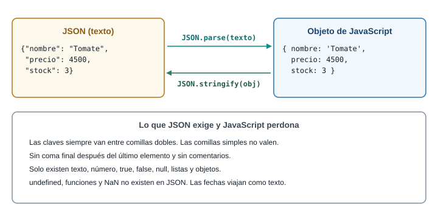
La diferencia esencial: un JSON es una cadena de texto; un objeto es una estructura en memoria. No puedes escribir texto.precio sobre una cadena JSON; primero hay que convertirla.
const texto = '{"nombre":"Tomate","precio":4500,"stock":3}';
const producto = JSON.parse(texto);
console.log(producto.precio);
console.log(typeof texto, typeof producto);
const deVuelta = JSON.stringify(producto);
console.log(deVuelta);
console.log(deVuelta === texto);4500
string object
{"nombre":"Tomate","precio":4500,"stock":3}
trueJSON.parse(texto)toma una cadena y devuelve el objeto o la lista que describe.JSON.stringify(valor)hace el camino inverso: devuelve la cadena JSON del valor.typeofconfirma la diferencia: la variabletextoesstring, la variableproductoesobject.- La última línea compara los dos textos. Son idénticos porque no había espacios sobrantes.
Para que el JSON sea legible, stringify acepta una sangría como tercer argumento: JSON.stringify(producto, null, 2). El segundo argumento (null) es un filtro que casi nunca usarás.
Reglas de JSON que JavaScript perdona y JSON no
| En JavaScript sí | En JSON no |
|---|---|
Claves sin comillas: { nombre: "x" } |
Las claves van siempre entre comillas dobles |
Comillas simples: 'x' |
Solo comillas dobles |
Coma final: [1, 2, ] |
Prohibida |
Comentarios // y /* */ |
No existen |
undefined, funciones, NaN |
No existen. Una fecha viaja como texto |
Errores típicos al leer JSON, con su mensaje real
Cuando JSON.parse recibe texto que no cumple las reglas lanza un SyntaxError. Esto es lo que muestra la consola de Chrome para los errores más frecuentes:
JSON.parse("{'a': 1}"); // comillas simples
JSON.parse('{"a": 1,}'); // coma final
JSON.parse(""); // texto vacío
JSON.parse(undefined); // se pasó undefined
JSON.parse("<!DOCTYPE html>"); // llegó HTML en lugar de JSON
JSON.parse(Promise.resolve(1)); // se pasó una promesa, no un textoSyntaxError: Expected property name or '}' in JSON at position 1 (line 1 column 2)
SyntaxError: Expected double-quoted property name in JSON at position 7 (line 1 column 8)
SyntaxError: Unexpected end of JSON input
SyntaxError: "undefined" is not valid JSON
SyntaxError: Unexpected token '<', "<!DOCTYPE html>" is not valid JSON
SyntaxError: Unexpected token 'o', "[object Promise]" is not valid JSONEl número de posición del mensaje es una pista valiosa: te dice en qué carácter dejó de entender el texto. Con textos largos, el mensaje muestra solo el comienzo seguido de puntos suspensivos ("<!DOCTYPE "...). Los dos últimos errores son los que más verás con APIs. "undefined" is not valid JSON significa que pasaste a parse una variable sin valor, por ejemplo una propiedad que no existe. [object Promise] significa que olvidaste un await y le diste a parse la promesa en lugar del texto. Y Unexpected token '<' significa que el servidor te respondió una página HTML, no JSON: suele ser una ruta mal escrita que devolvió una página de error. La causa está en la petición. Mira en Network la pestaña Response y lo verás con tus ojos.
El siguiente texto tiene cuatro errores. Encuéntralos sin ejecutarlo y escribe el JSON correcto:
{
nombre: 'Miel de abeja',
"precio": 18000,
"disponible": undefined,
"etiquetas": ["dulce", "natural",],
}Los cuatro errores: la clave nombre sin comillas dobles, el valor entre comillas simples, undefined (no existe en JSON) y la coma final después de "natural". Una versión válida:
{
"nombre": "Miel de abeja",
"precio": 18000,
"disponible": null,
"etiquetas": ["dulce", "natural"]
}Reemplazar undefined por null es una decisión de diseño: null dice “no hay valor”. Otra opción válida es omitir la clave disponible.
Conexión con el proyecto
El contrato de tu futura API de productos es un JSON como el anterior. Decidir sus nombres y su forma (¿cantidad o stock? ¿el precio en pesos enteros o con decimales?) es una decisión de diseño que tomarás entre el frontend y el backend. Por eso conviene que tu frontend no dependa de los nombres de una API en particular: lo resolverás con una capa de adaptación en el taller.
4 Parte 3. El problema de esperar
El problema
Pedir el catálogo tarda. No es instantáneo: la petición viaja, el servidor trabaja, la respuesta regresa. Si JavaScript se quedara parado esperando, la página entera se congelaría: nadie podría hacer clic ni desplazarse. Entender cómo evita JavaScript ese congelamiento es el paso más difícil de la semana y el que más errores evita después.
Este código se ejecuta en la consola. ¿En qué orden crees que aparecen las letras?
console.log("A");
setTimeout(() => console.log("B"), 0);
Promise.resolve().then(() => console.log("C"));
console.log("D");El temporizador está en 0 milisegundos. Escribe tu predicción antes de abrir la respuesta.
La salida es A, D, C, B. Si esperabas A, B, C, D o A, D, B, C, tu modelo del orden de ejecución todavía no incluye las colas. Las dos secciones siguientes explican por qué.
Un solo hilo
JavaScript ejecuta tu código en un solo hilo: hace una cosa a la vez, de arriba abajo. Mientras una función corre, nada más corre. Si pidieras datos de forma bloqueante (esperando parado), tu código, las animaciones, los clics y el desplazamiento esperarían con él.
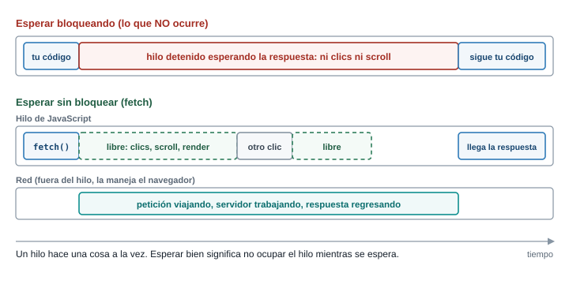
La solución es que esperar no sea trabajo de JavaScript. Cuando llamas a fetch o a setTimeout, JavaScript no espera: le entrega la tarea al navegador, que la hace por fuera de tu hilo, y sigue con la siguiente línea. Cuando la tarea termina, el navegador deja avisado a JavaScript para que ejecute lo que tú pediste que ocurriera “después”.
Puedes comprobar que un hilo ocupado congela todo. Pega esto en la consola:
const inicio = Date.now();
setTimeout(() => console.log("el timer de 0 ms se ejecutó"), 0);
while (Date.now() - inicio < 2000) {} // ocupa el hilo 2 segundos
console.log("bucle terminado");bucle terminado
el timer de 0 ms se ejecutóEl temporizador de 0 ms espera dos segundos completos, porque el hilo estaba ocupado con el while. Durante ese tiempo, la pestaña no respondió a nada. Un temporizador no garantiza cuándo corre: garantiza que no corre antes del tiempo indicado, y solo cuando el hilo esté libre.
Modelo mental: pila, Web APIs y colas
Hay cuatro piezas que debes poder dibujar de memoria.
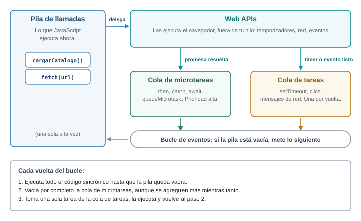
- Pila de llamadas (call stack). Donde se ejecuta tu código. Cada función que se llama se apila y cuando termina se desapila. Solo se ejecuta lo que está arriba.
- Web APIs. Funciones que el navegador hace por fuera de tu hilo: temporizadores, red (
fetch), eventos del DOM. - Cola de tareas (task queue). Cuando una Web API termina un trabajo (venció el temporizador, el usuario hizo clic), deja en esta cola el callback a ejecutar.
- Cola de microtareas (microtask queue). Una segunda cola, con prioridad más alta. Aquí caen los callbacks de promesas: lo que va dentro de
.then,.catch,.finally, y lo que está después de unawait.
El bucle de eventos (event loop) es el vigilante que decide qué entra a la pila. Repite sin parar estas reglas, que sí se memorizan:
- Ejecuta el código sincrónico hasta que la pila queda vacía.
- Vacía por completo la cola de microtareas. Si una microtarea agrega otra, esa también se ejecuta antes de seguir.
- Toma una tarea de la cola de tareas y la ejecuta.
- Vuelve al paso 2.
Con esto se explica el ejercicio de la predicción:
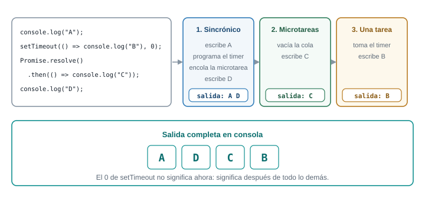
- El código sincrónico corre primero: escribe
A, programa el temporizador (lo entrega a las Web APIs, que lo dejarán en la cola de tareas cuando venza), deja la microtarea de la promesa y escribeD. - La pila queda vacía. El bucle vacía las microtareas: escribe
C. - Solo entonces toma la tarea del temporizador: escribe
B.
Por qué las promesas ganan a los temporizadores: una microtarea corre al terminar el código actual, sin pasar por la fila de tareas. Un temporizador de 0 ms no significa “ahora”: significa “después de todo lo demás que ya está pendiente”.
Ejercicios de predicción
Para cada fragmento, escribe el orden de salida antes de abrir la respuesta. Las respuestas fueron comparadas con la ejecución real.
async function cargar() {
console.log("1");
await null;
console.log("2");
}
console.log("0");
cargar();
console.log("3");La salida es 0, 1, 3, 2. Una función async corre de forma sincrónica hasta el primer await: por eso 1 sale antes que 3. En el await, la función se pausa y lo que sigue (console.log("2")) se convierte en microtarea. El código principal continúa y escribe 3; recién con la pila vacía corre la microtarea y sale 2.
console.log("inicio");
setTimeout(() => {
console.log("timer 1");
Promise.resolve().then(() => console.log("micro dentro del timer 1"));
}, 0);
setTimeout(() => console.log("timer 2"), 0);
Promise.resolve()
.then(() => console.log("then 1"))
.then(() => console.log("then 2"));
queueMicrotask(() => console.log("microtarea suelta"));
console.log("fin");inicio
fin
then 1
microtarea suelta
then 2
timer 1
micro dentro del timer 1
timer 2Primero lo sincrónico (inicio, fin). Luego se vacía la cola de microtareas en el orden en que llegaron: then 1 y microtarea suelta estaban ya en cola; then 2 solo se encola cuando termina then 1, así que va después de microtarea suelta. Después viene una tarea, timer 1, y antes de pasar a timer 2 el bucle vacía las microtareas, por eso micro dentro del timer 1 sale antes que timer 2.
async function a() {
console.log("a: inicio");
await b();
console.log("a: después de b");
}
async function b() {
console.log("b: corre");
}
console.log("1");
a();
setTimeout(() => console.log("timeout"), 0);
console.log("2");1
a: inicio
b: corre
2
a: después de b
timeouta() corre sincrónicamente hasta su await, y b() también corre sincrónicamente porque llamar a una función async ejecuta su cuerpo de inmediato. Lo que queda después del await es una microtarea, y por eso sale antes que el timeout, que es una tarea.
Lo que se memoriza y lo que se razona
Se memorizan las cuatro reglas del bucle. No se memoriza cada orden de salida: se razona con ellas. Cuando un orden de salida te sorprenda, pregúntate dos cosas: ¿esa línea es sincrónica, microtarea o tarea? ¿Qué quedó antes en la cola?
Tu panel pide el catálogo con fetch y luego pinta las tarjetas. Si en la línea siguiente al fetch intentas pintar las tarjetas sin esperar, ¿qué datos tendrás? ¿Por qué el código “se ve bien” y aun así falla?
La línea siguiente corre antes de que llegue la respuesta, porque fetch no detiene el hilo. Lo único que tienes en ese instante es una promesa pendiente, no los datos. El código parece correcto porque se lee de arriba abajo, pero la respuesta llega en otro momento del bucle de eventos. Para trabajar con ese “después” existen las promesas.
Conexión con el proyecto
En el panel del productor, cada llamada a la API es una espera. Mientras llega la respuesta, la página debe seguir viva y mostrar “Cargando…”. Todo el taller depende de esta idea: la espera no bloquea, y lo que dependa de la respuesta se escribe después, dentro de un callback o tras un await.
5 Parte 4. Promesas
El problema
Si fetch no devuelve los datos, ¿qué devuelve? Necesitamos un objeto que represente “un resultado que todavía no llegó, pero que llegará o fallará”, y una forma de decir “cuando llegue, haz esto”. Ese objeto es la promesa.
const promesa = new Promise((resolve) => {
setTimeout(() => resolve("listo"), 1000);
});
console.log(promesa);¿Qué imprime la consola: "listo", undefined o algo más? ¿Y si imprimes la misma variable pasados dos segundos?
Imprime una promesa pendiente: Promise { <pending> } en Node y Promise {<pending>} en Chrome. La promesa es un contenedor que todavía no tiene valor. Si la imprimes pasados dos segundos, ya aparecerá como cumplida y mostrará "listo" dentro: Promise {<fulfilled>: 'listo'}.
Modelo mental: tres estados
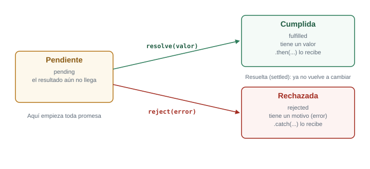
Una promesa está siempre en uno de tres estados:
- Pendiente (pending): el resultado aún no llega. Es el estado inicial.
- Cumplida (fulfilled): terminó bien y tiene un valor.
- Rechazada (rejected): terminó mal y tiene un motivo, normalmente un objeto
Error.
Una promesa cumplida o rechazada está resuelta (settled) y no vuelve a cambiar. Con eso en mente, una promesa es solo la respuesta a la pregunta “¿ya terminó y cómo le fue?”. Quien la usa registra qué hacer en cada caso.
El mecanismo: crear y consumir
Casi nunca crearás promesas a mano (fetch ya te devuelve una), pero crear una sirve para entender cómo se resuelven:
const promesa = new Promise((resolve, reject) => {
setTimeout(() => resolve("listo"), 100);
});
promesa.then((valor) => console.log(valor));new Promise(...)recibe una función que corre de inmediato y que recibe dos funciones:resolvepara cumplir yrejectpara rechazar.- Dentro,
setTimeoutsimula una espera de 100 ms. Al vencer, llama aresolve("listo"): la promesa pasa de pendiente a cumplida con el valor"listo". .then(...)registra el callback que se ejecutará cuando la promesa se cumpla. Ese callback corre como microtarea, como viste en la Parte 3.
listothen, catch y finally
| Método | Se ejecuta cuando | Recibe |
|---|---|---|
.then(f) |
La promesa se cumple | El valor |
.catch(f) |
La promesa se rechaza (o una función anterior lanzó un error) | El error |
.finally(f) |
Se resuelve, por cualquiera de los dos caminos | Nada |
finally sirve para lo que debe ocurrir siempre, como esconder el aviso “Cargando…”.
Encadenamiento
Cada .then devuelve una promesa nueva, y lo que devuelve su callback pasa como valor al siguiente .then. Eso permite armar una secuencia en vez de anidar callbacks:
Promise.resolve(2)
.then((n) => n * 10)
.then((n) => { console.log(n); return n + 1; })
.then((n) => { throw new Error("falló en " + n); })
.then(() => console.log("esto no se imprime"))
.catch((e) => console.log("catch:", e.message))
.finally(() => console.log("finally"));20
catch: falló en 21
finallyPaso a paso:
Promise.resolve(2)crea una promesa ya cumplida con el valor2.- El primer
.thenmultiplica: devuelve20, que pasa al siguiente. - El segundo imprime
20y devuelve21. - El tercero lanza un error. Una excepción dentro de un
.thenrechaza la promesa que ese.thendevuelve. - El cuarto
.thense salta: solo se ejecuta si la promesa anterior se cumplió. El rechazo viaja por la cadena hasta encontrar un.catch. .catchrecibe el error e imprimecatch: falló en 21..finallycorre al final, haya habido error o no.
Errores frecuentes con promesas
Olvidar el return dentro del .then. Sin return, el siguiente .then recibe undefined:
Promise.resolve("A")
.then((x) => { console.log(x); }) // no devuelve nada
.then((x) => { console.log(x); });A
undefinedEl segundo .then imprimió undefined porque el primero no devolvió el valor. Con llaves hay que escribir return; sin llaves, la flecha devuelve sola.
Anidar en lugar de encadenar. Poner un .then dentro de otro .then funciona, pero devuelve la estructura de pirámide que las promesas querían evitar. Si el primer .then devuelve una promesa, el siguiente espera a que se resuelva sola: no necesitas anidar.
No dejar un .catch. Una promesa rechazada que nadie atiende produce en la consola Uncaught (in promise) Error: .... No detiene la página, pero indica que ese error no se mostró a nadie.
¿Qué imprime este código y en qué orden?
Promise.reject(new Error("uno"))
.then(() => console.log("A"))
.catch((e) => { console.log("B", e.message); return "recuperado"; })
.then((v) => console.log("C", v))
.finally(() => console.log("D"));B uno
C recuperado
DLa promesa nace rechazada, así que A se salta. El .catch imprime B uno y devuelve "recuperado": eso cumple la promesa que .catch devuelve, y la cadena continúa por el camino feliz. Por eso el siguiente .then sí corre e imprime C recuperado. finally cierra con D. Un .catch que devuelve un valor “arregla” la cadena; si quisieras que el error siguiera propagándose, tendrías que volver a lanzarlo con throw.
Conexión con el proyecto
Cada petición de tu panel será una cadena de promesas o, como verás en la Parte 6, su versión con await. El .catch final de esa cadena es el lugar donde tu interfaz decide mostrar el estado de error.
6 Parte 5. fetch
El problema
Ya sabes qué es una petición HTTP y qué es una promesa. fetch es la función del navegador que hace la petición y devuelve una promesa. Pero hay una sorpresa que causa más errores que cualquier otra de esta semana, y conviene enfrentarla de entrada.
Pides un producto que no existe: fetch("https://dummyjson.com/products/999999"). El servidor responde 404 Not Found. ¿Esa promesa se rechaza (y entra al .catch) o se cumple? Y cuando escribes fetch(url).then(r => r.json()), ¿cuántas promesas hay en juego?
La promesa se cumple: fetch solo rechaza cuando no pudo obtener ninguna respuesta (sin conexión, dominio inexistente, bloqueo por CORS). Un 404 o un 500 es una respuesta válida del servidor, así que la promesa se cumple y debes revisar tú mismo el resultado. Y hay dos promesas: fetch devuelve una que se cumple con un objeto Response cuando llegan los encabezados, y response.json() devuelve otra que se cumple cuando el cuerpo se descargó y se convirtió en objeto.
Modelo mental: dos promesas
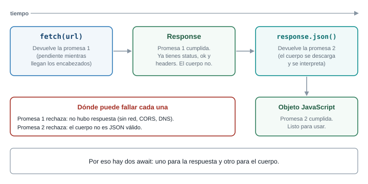
La razón de las dos promesas es práctica: el servidor puede responder primero los encabezados (estado, tipo de contenido) y enviar el cuerpo después, en pedazos. Con la primera promesa ya puedes saber si hay un error antes de descargar todo el cuerpo.
El objeto Response que entrega la primera promesa tiene, entre otras, estas propiedades:
| Propiedad | Qué contiene |
|---|---|
status |
El código numérico: 200, 404, 500 |
ok |
true si el estado está entre 200 y 299 |
headers |
Los encabezados de la respuesta |
json() |
Método que devuelve una promesa del cuerpo convertido a objeto |
text() |
Método que devuelve una promesa del cuerpo como texto |
El mecanismo: qué rechaza fetch y qué no
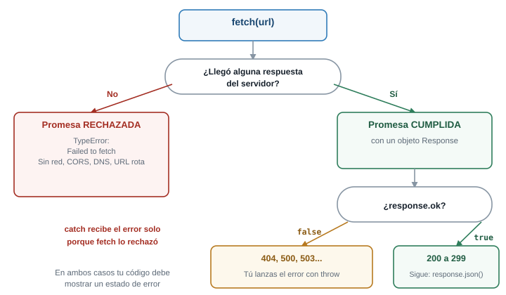
La regla completa:
- Se rechaza con un
TypeErrorcuando la petición no pudo completarse: sin red, dominio que no existe, servidor caído, o respuesta bloqueada por CORS. Todos esos casos producen el mismo mensaje poco informativo:TypeError: Failed to fetch. - Se cumple en cualquier otro caso, incluidos
404,401y500. Allíresponse.okvalefalsey es tu código quien debe decidir qué hacer.
Compruébalo con una petición real (en la consola de una pestaña de localhost, o en un archivo .mjs con Node 18 o superior):
const respuesta = await fetch("https://dummyjson.com/products/999999");
console.log(respuesta.status, respuesta.ok);
console.log(await respuesta.json());404 false
{ message: "Product with id '999999' not found" }No hubo ningún error en consola, y la promesa se cumplió. Sin revisar ok, tu código habría tratado { message: ... } como si fuera un producto.
GET: leer datos
La forma completa y segura de leer, con then:
fetch("https://dummyjson.com/products/1?select=title,price")
.then((respuesta) => {
if (!respuesta.ok) {
throw new Error(`El servidor respondió ${respuesta.status}`);
}
return respuesta.json();
})
.then((producto) => console.log(producto))
.catch((error) => console.error(error.message));{ id: 1, title: 'Essence Mascara Lash Princess', price: 9.99 }Línea por línea:
fetch(url)envía la peticiónGET(el método por defecto) y devuelve la primera promesa.- El primer
.thenrecibe elResponse. Allí se revisaok: si es falso, se lanza un error para que el.catchde abajo lo atienda como a cualquier otro. Esa línea es la quefetchno hace por ti. return respuesta.json()devuelve la segunda promesa. Como se devuelve desde un.then, la cadena espera a que se resuelva antes de pasar al siguiente.- El segundo
.thenrecibe ya el objeto convertido. .catchatiende los dos tipos de falla: elTypeErrordefetch(sin conexión) y elErrorque lanzaste por un estado no exitoso.
POST: enviar datos
Para crear un recurso se envía un cuerpo. Hay que decir cómo se envía con un segundo argumento, un objeto de opciones:
const nuevo = { title: "Mora de Castilla", price: 1.5, stock: 20 };
fetch("https://dummyjson.com/products/add", {
method: "POST",
headers: { "Content-Type": "application/json" },
body: JSON.stringify(nuevo),
})
.then((respuesta) => {
if (!respuesta.ok) throw new Error(`Estado ${respuesta.status}`);
return respuesta.json();
})
.then((creado) => console.log(creado));{ id: 195, title: 'Mora de Castilla', price: 1.5, stock: 20 }method: "POST"cambia el método. Si lo omites, se envía unGETy la ruta no existe para ese método.headersagrega el encabezadoContent-Type: application/json, que le avisa al servidor “el cuerpo que envío es JSON”. Sin él, muchos servidores no interpretan el cuerpo.bodysolo acepta texto (y otros formatos binarios), no objetos. Por eso se convierte conJSON.stringify. Si pasas el objeto directamente, el navegador lo convierte a la cadena"[object Object]", un error silencioso.- La respuesta incluye el
idasignado por el servidor (195). Esta API de práctica simula la creación: si pides el producto 195 después, no existe.
Qué pasa si…
…llamas a response.json() dos veces. El cuerpo es un flujo de datos que se consume una sola vez:
TypeError: Failed to execute 'json' on 'Response': body stream already read(En Node el mensaje es Body is unusable: Body has already been read.) Si necesitas el dato en dos sitios, guarda el resultado de la primera llamada en una variable.
…escribes mal la ruta. fetch("https://dummyjson.com/productos") se cumple con estado 404: no hay error de red. Solo response.ok o la pestaña Network te lo cuentan.
…el servidor responde algo que no es JSON y llamas a json(). La segunda promesa se rechaza con SyntaxError: Unexpected token '<', "<!DOCTYPE "... is not valid JSON, que ya conoces de la Parte 2.
Un compañero escribió esto y el producto creado vuelve vacío: la respuesta trae solo { id: 195 }, sin título ni precio:
fetch("https://dummyjson.com/products/add", {
method: "POST",
body: { title: "Mora", price: 1.5 },
});Encuentra dos errores y corrígelos.
Primer error: falta el encabezado Content-Type: application/json, así el servidor no sabe que recibe JSON. Segundo error: body es un objeto y debe ser un texto (JSON.stringify); un objeto se convierte en el texto [object Object], que no contiene ningún dato. Corregido:
fetch("https://dummyjson.com/products/add", {
method: "POST",
headers: { "Content-Type": "application/json" },
body: JSON.stringify({ title: "Mora", price: 1.5 }),
});Conexión con el proyecto
Leer el catálogo es un GET. Publicar un producto nuevo en el panel es un POST. En los dos casos la regla es la misma: revisar ok, lanzar un error propio si no lo es, y dejar que un solo .catch decida qué mostrar en la interfaz. Esa lógica se repetirá en cada petición, así que la escribirás una vez en una función en el taller.
7 Parte 6. async y await
El problema
Las cadenas de .then funcionan, pero leen distinto de cómo piensas: “pide el producto, luego revisa el estado, luego conviértelo”. async/await permite escribir exactamente eso, en orden de arriba abajo, sin cambiar lo que ocurre por debajo.
async function obtener() {
return 42;
}
const resultado = obtener();
console.log(resultado);¿Imprime 42? ¿Qué devuelve realmente una función marcada con async?
No imprime 42: imprime una promesa, Promise {<fulfilled>: 42}. Una función async siempre devuelve una promesa. Lo que escribes con return es el valor con el que esa promesa se cumple, y si lanzas un error dentro, la promesa se rechaza.
Modelo mental: lo mismo, con otra apariencia
async/await no cambia el funcionamiento: es la misma maquinaria de promesas y microtareas. Dos reglas lo resumen:
asyncantes de una función hace que devuelva una promesa y permite usarawaitdentro.await promesapausa esa función hasta que la promesa se resuelva, y devuelve el valor. Pero no pausa el hilo: mientras la función espera, JavaScript atiende otras cosas. Lo que queda después delawaites una microtarea que se ejecutará cuando la promesa se resuelva.
La función de la Parte 5, reescrita:
async function obtenerProducto(id) {
const respuesta = await fetch(`https://dummyjson.com/products/${id}?select=title,price`);
if (!respuesta.ok) {
throw new Error(`El servidor respondió ${respuesta.status}`);
}
return respuesta.json();
}
const producto = await obtenerProducto(1);
console.log(producto);{ id: 1, title: 'Essence Mascara Lash Princess', price: 9.99 }async functiondeclara una función que devuelve una promesa.await fetch(...)espera la primera promesa y devuelve elResponse, no la promesa.- El
ify elthrowson los mismos de la versión conthen: revisaroksigue siendo tu trabajo. return respuesta.json()devuelve la segunda promesa; como la función es async, se aplana sola. Escribirreturn await respuesta.json()daría el mismo resultado.- El
awaitde la última sección solo funciona en el nivel superior de un módulo (<script type="module">o un archivo.mjs); en un script normal, usaawaitdentro de una funciónasync.
try, catch y finally
Un await sobre una promesa rechazada lanza una excepción en esa línea, y se atiende con el try/catch de siempre:
async function mostrarProducto(id) {
try {
const producto = await obtenerProducto(id);
console.log("Recibido:", producto.title);
} catch (error) {
console.error("No se pudo cargar:", error.message);
} finally {
console.log("Fin de la operación");
}
}
await mostrarProducto(1);
await mostrarProducto(999999);Recibido: Essence Mascara Lash Princess
Fin de la operación
No se pudo cargar: El servidor respondió 404
Fin de la operaciónEl catch atiende cualquier cosa que falle dentro del try: la falta de red, el throw de un estado no exitoso y un JSON inválido. finally corre en ambos casos, y es el sitio natural para esconder el aviso “Cargando…”.
Errores frecuentes con async/await
1. Olvidar el await. Es el error más común y el más confuso:
const mal = obtenerProducto(1); // falta await
console.log(mal, mal.title);Promise { <pending> } undefinedmal es una promesa, no un producto, y mal.title es undefined. Si ves una promesa donde esperabas datos, o un undefined donde esperabas un campo, busca primero el await que falta.
2. Usar await dentro de forEach. forEach no espera a las funciones async que le pasas:
const ids = [1, 2, 3];
const res = [];
ids.forEach(async (id) => {
res.push(await obtenerProducto(id));
});
console.log("justo después:", res.length);justo después: 0forEach lanza las tres funciones y sigue sin esperar a ninguna: cuando llega el console.log, el arreglo está vacío. Para esperar de verdad, usa for...of (en serie) o Promise.all con map (en paralelo):
for (const id of ids) {
const p = await obtenerProducto(id);
console.log(p.id, p.title);
}1 Essence Mascara Lash Princess
2 Eyeshadow Palette with Mirror
3 Powder Canister3. Serie cuando podía ser paralelo. Tres await seguidos esperan uno tras otro, aunque las peticiones no dependan entre sí:
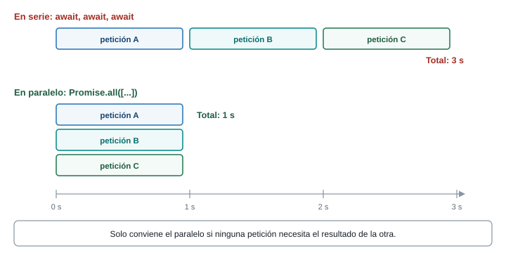
const lento = () =>
fetch("https://dummyjson.com/products?limit=1&select=title&delay=1000").then((r) => r.json());
let t0 = performance.now();
await lento();
await lento();
await lento();
console.log("en serie:", Math.round(performance.now() - t0), "ms");
t0 = performance.now();
await Promise.all([lento(), lento(), lento()]);
console.log("en paralelo:", Math.round(performance.now() - t0), "ms");en serie: 3303 ms
en paralelo: 1332 ms(Los números varían con tu conexión; la proporción no.) delay=1000 es un parámetro de la API de práctica que retrasa la respuesta un segundo. Promise.all recibe una lista de promesas, las espera todas a la vez y se cumple con la lista de resultados en el mismo orden. Úsalo solo cuando ninguna petición necesita el resultado de otra.
Promise.all es todo o nada: si una promesa se rechaza, rechaza de inmediato, aunque las otras sigan en curso. Cuando quieras el resultado de todas aunque alguna falle, usa Promise.allSettled:
const resultados = await Promise.allSettled([obtenerProducto(1), obtenerProducto(999999)]);
console.log(resultados.map((r) => r.status));[ 'fulfilled', 'rejected' ]Esta función debería devolver los títulos de los productos 1, 2 y 3, pero devuelve una lista de promesas. Encuentra la causa y corrígela para que las tres peticiones se hagan a la vez:
async function titulos() {
const ids = [1, 2, 3];
const productos = ids.map((id) => obtenerProducto(id));
return productos.map((p) => p.title);
}ids.map(...) devuelve una lista de promesas, y las promesas no tienen title. Falta esperarlas. Con Promise.all se esperan a la vez:
async function titulos() {
const ids = [1, 2, 3];
const productos = await Promise.all(ids.map((id) => obtenerProducto(id)));
return productos.map((p) => p.title);
}
console.log(await titulos());[
'Essence Mascara Lash Princess',
'Eyeshadow Palette with Mirror',
'Powder Canister'
]Las tres peticiones salen juntas porque map las lanza todas antes de que Promise.all empiece a esperar.
Qué es memoria y qué es razonamiento
Se memorizan las dos reglas de async/await y la advertencia: fetch no rechaza por un 404. Se razona el resto: ¿cuántas esperas hay?, ¿dependen unas de otras?, ¿dónde puede fallar cada una?
Conexión con el proyecto
Tu función obtenerCatalogo() será una función async con un try/catch alrededor: espera la petición, revisa ok, convierte el cuerpo y devuelve el catálogo. Quien la llame (la parte de la interfaz) sabrá si salió bien o mal con el mismo try/catch.
8 Parte 7. Manejo de errores y estados de la interfaz
El problema
Un panel que solo funciona cuando todo sale bien no sirve. La conexión de un productor en una vereda se cae, el servidor responde 503 en horas pico, la API cambia un campo. Si tu código no prevé esos casos, la persona ve una página en blanco y no sabe qué hacer. Esta parte trata dos preguntas: qué puede fallar y qué ve la persona en cada caso.
Tu panel hace fetch del catálogo. Lista todas las cosas que pueden pasar, desde que se hace la petición hasta que se pintan las tarjetas, y clasifícalas: ¿cuáles producen una promesa rechazada y cuáles una respuesta “exitosa” que igual no sirve?
Rechazan la promesa de fetch: sin conexión, dominio que no existe, servidor apagado, bloqueo por CORS, petición cancelada o con tiempo agotado. Cumplen la promesa pero no sirven: 4xx (petición inválida, sin permiso, ruta que no existe), 5xx (falla del servidor). Rechazan la segunda promesa: cuerpo que no es JSON válido. Funcionan, pero con una sorpresa: JSON válido con una forma distinta de la esperada (falta products), o una lista que llegó vacía.
Modelo mental: cuatro estados de la interfaz
Mientras tu panel pide datos, la interfaz está en uno solo de cuatro estados:
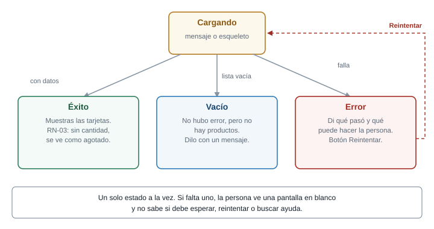
| Estado | Cuándo | Qué muestra |
|---|---|---|
| Cargando | Se envió la petición y no hay respuesta | Un mensaje o un esqueleto |
| Éxito | Llegaron datos | Las tarjetas. RN-03: sin cantidad, se ve agotado |
| Vacío | Llegó bien, pero la lista está vacía | Un mensaje que lo diga |
| Error | Algo falló | Qué pasó, qué puede hacer la persona, y un botón para reintentar |
Distinguir “vacío” de “error” importa: “No tienes productos publicados” invita a publicar uno, mientras “No se pudo cargar” invita a reintentar. Si los mezclas, un productor con el catálogo vacío creería que perdió sus datos.
La forma más simple de no olvidar un estado es guardarlo en una variable y que el render sea una función que solo mira esa variable. Es el patrón de estado y render que ya usaste en la Semana 7:
const estado = {
fase: "cargando", // "cargando" | "error" | "listo"
productos: [],
error: null,
};fase toma un solo valor a la vez. “Vacío” no necesita una fase propia: es la fase listo con productos.length === 0.
Un tipo de error propio, para saber qué falló
El catch recibe errores de tipos distintos (TypeError, SyntaxError, el Error que lanzas tú) y necesita decidir qué mensaje mostrar y si vale la pena reintentar. Conviene unificarlos en un solo tipo, con una etiqueta que diga de qué clase es:
class ErrorApi extends Error {
constructor(mensaje, tipo, estado = null) {
super(mensaje);
this.name = "ErrorApi";
this.tipo = tipo; // "red" | "tiempo" | "http" | "formato"
this.estado = estado; // código HTTP, solo para tipo "http"
}
}class ErrorApi extends Errorcrea un error propio que hereda deError: sigue teniendomessageystack.super(mensaje)inicializa la parte heredada.tipoyestadoson las dos propiedades nuevas que la interfaz y el reintento usarán.
Los cuatro modos de fallar, uno por uno
1. Sin conexión o servidor inaccesible (tipo: "red"). fetch rechaza con TypeError: Failed to fetch. Para probarlo sin desconectar el cable, en DevTools, pestaña Network, cambia el menú No throttling a Offline. Es el mismo mensaje que produce un bloqueo por CORS, así que para distinguirlos hay que mirar la consola (Parte 8).
2. Tiempo agotado (tipo: "tiempo"). Una petición que nunca responde deja la interfaz en “Cargando…” para siempre. La solución es fijar un tiempo máximo con AbortSignal.timeout:
try {
const respuesta = await fetch("https://dummyjson.com/products?limit=1&delay=3000", {
signal: AbortSignal.timeout(500),
});
} catch (error) {
console.log(error.name, "-", error.message);
}TimeoutError - signal timed outAbortSignal.timeout(500)crea una señal que se activa sola a los 500 ms.- La opción
signaldefetchle dice “cancela la petición si esta señal se activa”. delay=3000hace que la API de práctica responda a los 3 segundos, para provocar el caso.- Al activarse,
fetchrechaza con un error cuyonameesTimeoutError.
Para cancelar por decisión tuya (por ejemplo, la persona escribió otra búsqueda y ya no te interesa la anterior) se usa un AbortController:
const controlador = new AbortController();
const promesa = fetch("https://dummyjson.com/products?delay=2000", {
signal: controlador.signal,
});
controlador.abort();
try {
await promesa;
} catch (error) {
console.log(error.name, "-", error.message);
}AbortError - signal is aborted without reasonDos nombres distintos, dos situaciones distintas: TimeoutError es “se acabó el tiempo” y AbortError es “alguien canceló”. Tu catch debe poder diferenciarlos, porque una cancelación voluntaria no es un error que deba mostrarse a la persona.
3. Respuesta con estado de error (tipo: "http"). La petición se completó y el servidor dijo “no”. El código 4xx o 5xx queda en estado. Se prueba con la ruta de práctica https://dummyjson.com/http/503, que responde exactamente ese código.
4. Cuerpo que no es JSON válido, o con otra forma (tipo: "formato"). response.json() rechaza con SyntaxError, o el JSON es válido pero no trae la lista esperada. Para lo primero, una prueba fácil es pedir una página HTML en lugar de una API (fetch("index.html") y luego .json()):
SyntaxError: Unexpected token '<', "<!DOCTYPE "... is not valid JSONLo segundo se valida a mano: if (!Array.isArray(datos.products)) throw new ErrorApi(...). Nunca asumas que la API te envía lo que prometió.
Una función que lo reúne todo
Estos cuatro modos se atienden una vez, en una función que usarán todas las peticiones:
async function pedirJSON(ruta, opciones = {}) {
let respuesta;
try {
respuesta = await fetch(URL_BASE + ruta, {
...opciones,
signal: AbortSignal.timeout(TIEMPO_MAXIMO_MS),
});
} catch (error) {
if (error.name === "TimeoutError") {
throw new ErrorApi("La API tardó demasiado en responder.", "tiempo");
}
throw new ErrorApi("No hay conexión con el servidor.", "red");
}
if (!respuesta.ok) {
throw new ErrorApi(`El servidor respondió ${respuesta.status}.`, "http", respuesta.status);
}
try {
return await respuesta.json();
} catch {
throw new ErrorApi("La respuesta no es un JSON válido.", "formato");
}
}Línea por línea:
let respuesta;se declara fuera deltrypara poder usarla después. Una variable declarada conconstdentro de un bloque no existe fuera de él.- El primer
try/catchenvuelve solo elfetch: cualquier cosa que falle aquí es un problema de red o de tiempo, nunca de HTTP.{ ...opciones, signal: ... }copia las opciones que pase quien llame (método, encabezados, cuerpo) y agrega la señal de tiempo. if (!respuesta.ok)es la revisión quefetchno hace por ti. Aquí nace el error de tipohttp.- El segundo
try/catchenvuelve solorespuesta.json(): si falla, el cuerpo no era JSON.catch {sin paréntesis es válido cuando no necesitas la variable del error. - Los mensajes están escritos para la persona, en español claro, sin tecnicismos. El mensaje técnico queda en
console.errorpara quien depure.
Reintento con espera creciente
No todo fallo merece un reintento. Un 503 puede resolverse en segundos; un 404 no cambiará por volver a pedirlo.
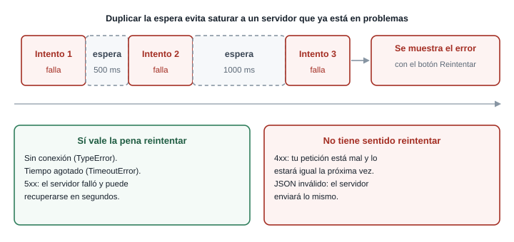
La estrategia habitual es la espera creciente (exponential backoff): esperar más después de cada fallo. Si un servidor está sobrecargado, miles de clientes reintentando cada medio segundo lo hunden más. Con la espera duplicada, los reintentos se distancian.
const esperar = (ms) => new Promise((resolver) => setTimeout(resolver, ms));
async function conReintentos(tarea, intentos = 3, esperaBaseMs = 500) {
for (let n = 1; n <= intentos; n++) {
try {
return await tarea();
} catch (error) {
const sePuedeReintentar =
error.tipo === "red" ||
error.tipo === "tiempo" ||
(error.tipo === "http" && error.estado >= 500);
if (!sePuedeReintentar || n === intentos) throw error;
const espera = esperaBaseMs * 2 ** (n - 1);
console.warn(`Intento ${n} falló (${error.message}) Reintento en ${espera} ms.`);
await esperar(espera);
}
}
}esperar(ms)convierte unsetTimeouten una promesa que se cumple pasado ese tiempo, de modo que se puede usar conawait. Es la forma habitual de “dormir” sin bloquear el hilo.tareaes una función que hace la petición, no la petición ya hecha. Hay que poder volver a ejecutarla en cada intento.forconawaitdentro sí espera, a diferencia deforEach: cada vuelta ocurre después de la anterior.sePuedeReintentarsolo es verdadero para red, tiempo agotado y5xx.- Si no se puede reintentar, o ya fue el último intento, se relanza el error con
throw errory sube a quien llamó. 2 ** (n - 1)produce 1, 2, 4…: las esperas son 500, 1000, 2000 ms.
Se usa pasándole la petición envuelta en una función flecha:
const datos = await conReintentos(() => pedirJSON("/http/503"));Con la ruta de práctica que siempre responde 503, la consola muestra:
Failed to load resource: the server responded with a status of 503 ()
Intento 1 falló (El servidor respondió 503.) Reintento en 500 ms.
Failed to load resource: the server responded with a status of 503 ()
Intento 2 falló (El servidor respondió 503.) Reintento en 1000 ms.
Failed to load resource: the server responded with a status of 503 ()Las líneas Failed to load resource las escribe el propio navegador por cada respuesta con error. Tras el tercer intento, conReintentos relanza el ErrorApi con el mensaje El servidor respondió 503. (el tipo es http y el estado 503) y la función que lo llamó recibe el rechazo. En total pasan unos 1500 ms entre el primer y el último intento por las dos esperas.
Si reintentas automáticamente un POST que crea un pedido, y la primera petición sí llegó pero la respuesta se perdió, ¿qué podría ocurrir? ¿Por qué el reintento automático es más seguro con GET?
Se podría crear el pedido dos veces. Un GET solo lee, así que repetirlo no cambia nada; un POST crea, y repetirlo duplica el efecto. Por eso en el taller el reintento automático se aplica a la lectura del catálogo, y la publicación de un producto muestra el error y deja que la persona decida.
Errores frecuentes
- Un
catchvacío o que solo haceconsole.log. El error desaparece para la persona: la interfaz sigue en “Cargando…” y nadie sabe por qué. Todocatchdebe cambiar el estado de la interfaz. - Mensajes técnicos al usuario.
TypeError: Failed to fetchno le dice nada a un productor. Un texto como “No hay conexión con el servidor” sí. - No reiniciar el estado. Al pulsar “Reintentar”, la interfaz debe volver a
cargandoy limpiar el error anterior, o mostrará el mensaje viejo junto al nuevo intento. - No distinguir vacío de error, como ya viste.
Conexión con el proyecto
RN-01 dice que un producto no puede publicarse sin precio y sin cantidad. Esa regla se valida dos veces: en el frontend, para avisar rápido y junto al campo, y en el backend, para que no se pueda saltar. Cuando el backend ASP.NET exista, responderá 400 con el campo que falta, y tu código lo mostrará con el mismo mecanismo que acabas de armar: un error tipo http, con su estado, que la interfaz traduce a un mensaje junto al campo.
9 Parte 8. CORS
El problema
Tu panel funciona en http://localhost:8921 y la API vive en https://dummyjson.com. Dos orígenes distintos. Un día cambias la URL de la API por la de otro servicio y todo se rompe, con un error rojo larguísimo en la consola que no dice “tu código está mal”. ¿Qué falló, y dónde?
Pides fetch("https://example.com/") desde tu panel en localhost. Tu código está bien escrito y el servidor de example.com funciona y responde 200. ¿La promesa se cumple, se rechaza o se queda colgada? Y si el servidor sí respondió, ¿quién impide que tu código vea la respuesta?
La promesa se rechaza con TypeError: Failed to fetch. El servidor sí respondió, pero el navegador descartó la respuesta antes de dártela, porque ese servidor no declaró que aceptara peticiones desde tu origen. El bloqueo ocurre en el navegador, no en el servidor ni en tu código.
Modelo mental: origen y política del mismo origen
Un origen es la combinación de esquema + host + puerto. Si cualquiera de los tres cambia, es otro origen.
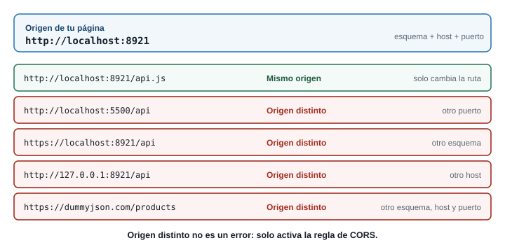
Por defecto, el navegador aplica la política del mismo origen (same-origin policy): un script cargado desde un origen no puede leer respuestas de otro origen. Es una protección: sin ella, una página maliciosa abierta en otra pestaña podría pedir, con tu sesión iniciada, los datos de tu banco y leerlos.
El problema es que esa política también bloquea usos legítimos, como un frontend en un origen y una API en otro. CORS (Cross-Origin Resource Sharing) es el mecanismo para relajar la política de forma controlada: el servidor declara, con encabezados, qué orígenes tienen permiso de leer sus respuestas.
La pieza clave es esta:
- El navegador envía en la petición el encabezado
Origincon el origen de tu página. - El servidor responde con
Access-Control-Allow-Origin, que dice a qué origen autoriza (*significa cualquiera, o un origen concreto). - El navegador compara. Si el permiso está y coincide, entrega la respuesta a tu código. Si falta o no coincide, la descarta y rechaza la promesa.
Quien decide es el servidor. Quien hace cumplir la regla es el navegador.
Solicitud simple y preflight
No todas las peticiones cruzadas se tratan igual.
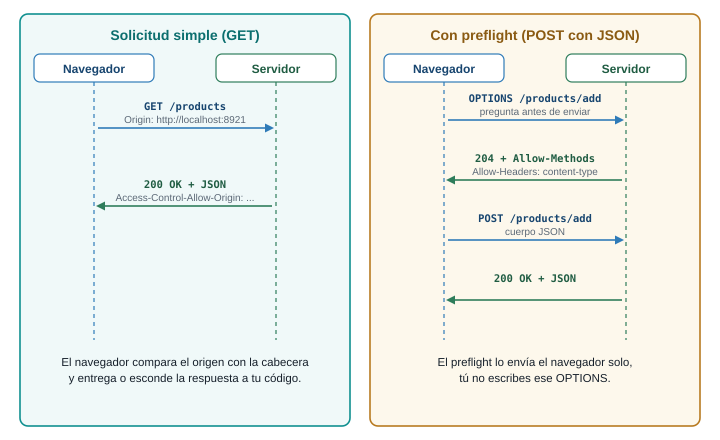
Una solicitud simple (por ejemplo, un GET con los encabezados por defecto) se envía directo y el navegador revisa la respuesta. Una petición que podría cambiar datos en el servidor o usa encabezados fuera de lo común se considera riesgosa, y antes de enviarla el navegador manda una solicitud de preflight: una petición OPTIONS automática que pregunta “¿aceptas un POST con este tipo de contenido desde este origen?”. Si el servidor responde que sí (con Access-Control-Allow-Methods y Access-Control-Allow-Headers), el navegador envía la petición real.
Esto explica algo que sorprende: un POST con Content-Type: application/json sí dispara preflight, porque application/json no está entre los tipos “simples” (text/plain, multipart/form-data y application/x-www-form-urlencoded). En tu panel, publicar un producto produce dos peticiones en Network, y la primera la hizo el navegador sin que lo pidieras.
Cómo se ve cuando falla
Esto fue lo que mostró la consola de Chrome al pedir https://example.com/, un servidor que no envía el encabezado:
Access to fetch at 'https://example.com/' from origin 'http://localhost:8921' has been blocked by
CORS policy: No 'Access-Control-Allow-Origin' header is present on the requested resource.Y en tu código, lo único que recibes es el TypeError: Failed to fetch sin detalle. La información está en la consola, no en el error de JavaScript. Si el fallo ocurre en el preflight, el mensaje cambia así:
Access to fetch at 'https://example.com/' from origin 'http://localhost:8921' has been blocked by
CORS policy: Response to preflight request doesn't pass access control check: No
'Access-Control-Allow-Origin' header is present on the requested resource.En la pestaña Network verás la petición en rojo, sin respuesta legible, y para un preflight fallido una línea OPTIONS aparte (al probarlo con example.com, ese OPTIONS terminó en 405).
Qué se arregla en el frontend y qué no
No se arregla desde el frontend. El permiso lo concede el servidor. Ningún cambio en tu JavaScript hace que un servidor te autorice. Estos “arreglos” que circulan no sirven o son peligrosos:
- Agregar
Access-Control-Allow-Origina tus peticiones. Ese encabezado es de respuesta; ponerlo en la petición no concede nada y, como es un encabezado fuera de lo común, provoca un preflight. fetch(url, { mode: "no-cors" }). La petición sale, pero la respuesta queda opaca: no puedes leer ni el estado ni el cuerpo. No resuelve el problema, solo calla el error.- Extensiones del navegador que desactivan CORS. Solo funcionan en tu computador y esconden el problema real que tendrán tus usuarios.
Sí se arregla del lado del servidor, o evitando el cruce de orígenes:
- Usar una API que ya habilite tu origen, como
dummyjson.com. - Configurar CORS en tu propio backend. Cuando el servidor sea tuyo (el de ASP.NET Core de las Semanas 10 a 13), le indicas qué orígenes aceptas.
- Servir frontend y API desde el mismo origen, caso en el que CORS ni se activa.
En tres casos distintos, tu consola muestra TypeError: Failed to fetch. Para cada uno di si es CORS o no, y qué mirarías:
- Tu panel está en
http://localhost:8921y pidehttp://localhost:5000/api/productos, un servidor propio que arrancaste hoy. - Estás sin internet y pides
https://dummyjson.com/products. - Pides
https://dummyjson.com/productsy la consola no muestra ningún mensaje que hable de CORS.
- Probablemente sí es CORS. El puerto es distinto (8921 y 5000), así que son orígenes distintos. Mira la consola: debería aparecer el mensaje
has been blocked by CORS policy. La solución es configurar CORS en ese servidor. - No es CORS. Sin internet no hay conexión con el servidor. Mira la barra de estado de la red y la pestaña Network: la petición aparece fallida y sin respuesta. El mensaje es igual, pero la consola no menciona CORS.
- Todavía no sabes. Sin mensaje de CORS en la consola, la causa es otra: red, DNS o una URL imposible de resolver. Descartar CORS leyendo la consola es el primer paso del diagnóstico.
Conexión con el proyecto
Cuando integres el frontend con el backend de las Semanas 10 a 13, este es el choque que ocurrirá primero: tu panel en un origen y la API en otro. Saber que la solución es del lado del servidor te ahorra horas buscando el error en tu JavaScript.
10 Parte 9. Seguridad al pintar datos de una API
El problema
Los datos de una API son datos de afuera. Hoy confías en dummyjson.com, pero mañana el nombre de un producto lo escribirá un productor desconocido. Si tu panel pinta ese nombre con la herramienta equivocada, el nombre puede ser código.
Un productor registra un producto con este nombre:
<img src="x" onerror="alert('hola')">Tu panel lo pinta con tarjeta.innerHTML = producto.nombre. Después otro productor lo pinta con tarjeta.textContent = producto.nombre. ¿Qué ve cada persona al abrir el catálogo?
Con innerHTML, el navegador interpreta el texto como HTML: crea un elemento img, la imagen x no existe, falla, y se ejecuta el código del atributo onerror: aparece una alerta. Con textContent, el navegador trata todo como texto y muestra literalmente <img src="x" onerror="alert('hola')">, sin ejecutar nada.
Modelo mental: texto contra HTML
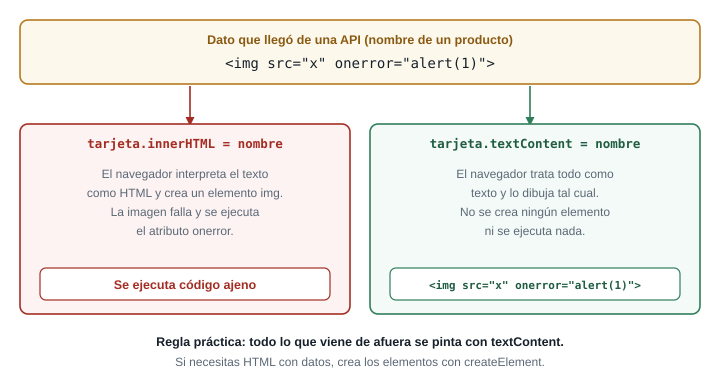
innerHTML convierte un texto en estructura: lo que parezca una etiqueta se vuelve un elemento. textContent solo asigna texto. Cuando el dato viene de afuera, convertirlo en estructura es entregarle a su autor la posibilidad de ejecutar código en tu página. Ese ataque se llama XSS (cross-site scripting), y con ese código el atacante podría leer lo que hay en la página, o redirigir a la persona. MDN lo explica en su página de innerHTML y recomienda textContent cuando el contenido debe ser texto.
El ejemplo de arriba usa un alert, inofensivo a propósito. Un ataque real haría algo menos visible.
El mecanismo: dos formas de pintar
const nombre = '<img src="x" onerror="alert(1)">'; // dato que "vino de la API"
const insegura = document.createElement("h3");
insegura.innerHTML = nombre; // se interpreta como HTML
const segura = document.createElement("h3");
segura.textContent = nombre; // se trata como texto
document.body.append(insegura, segura);Con innerHTML se ejecuta el alert. Con textContent aparece el texto tal cual. El panel del taller construye cada tarjeta con document.createElement y asigna todo con textContent, incluso lo que “parece” seguro, como un precio.
Si en algún caso necesitas armar HTML con datos, crea los elementos uno por uno con createElement y append en vez de concatenar texto dentro de innerHTML. Es más largo, pero no hay una puerta por donde se cuele código.
Una línea como tarjeta.innerHTML = `<h3>${producto.nombre}</h3>` parece inocente porque se ve ordenada, pero es exactamente el mismo problema: producto.nombre entra al HTML como texto interpretable. Que el código se vea limpio no lo hace seguro.
Los secretos no van en el frontend
La otra regla de esta parte es más corta: todo lo que está en tu JavaScript lo puede leer cualquiera. Cualquier visitante abre DevTools, entra a la pestaña Sources o revisa en Network los encabezados de cada petición. Si pones una llave secreta de una API en tu app.js (const LLAVE = "sk-...";) o en un encabezado Authorization fijo, ya no es secreta.
- La API de esta guía no pide llave, a propósito.
- Si una API exige llave, esa llave se usa desde el backend: tu frontend le pide al backend, y el backend le pide a la API con la llave guardada. Por eso la cadena de conexión y las credenciales del proyecto viven en variables de entorno o en el administrador de secretos de .NET, nunca en el repositorio (requisito de seguridad del proyecto).
- No subas llaves a GitHub: aunque las borres después, quedan en el historial de Git.
Lo que el frontend sí puede guardar es un token de sesión temporal que el backend entrega después de que la persona inicia sesión. Ese tema llega con la autenticación del proyecto.
Revisa este fragmento del panel. ¿Qué tiene de peligroso y cómo lo corriges?
function pintar(productos) {
const lista = document.getElementById("lista");
lista.innerHTML = productos
.map((p) => `<article><h3>${p.nombre}</h3><p>${p.cantidad} disponibles</p></article>`)
.join("");
}p.nombre se inserta dentro de un texto HTML y se interpreta: si el nombre contiene una etiqueta, se ejecuta. Se corrige construyendo los elementos y asignando con textContent:
function pintar(productos) {
const lista = document.getElementById("lista");
lista.replaceChildren(
...productos.map((p) => {
const tarjeta = document.createElement("article");
const titulo = document.createElement("h3");
titulo.textContent = p.nombre;
const cantidad = document.createElement("p");
cantidad.textContent = `${p.cantidad} disponibles`;
tarjeta.append(titulo, cantidad);
return tarjeta;
})
);
}replaceChildren vacía la lista y agrega las tarjetas nuevas. Fíjate que ${p.cantidad} queda en una plantilla de texto, pero se asigna con textContent, no con innerHTML: la plantilla en sí no era el problema, sino adónde se asignaba.
Conexión con el proyecto
En el panel del taller, todo lo que viene de la API (nombre, categoría, precio) se pinta con textContent. El requisito de seguridad del proyecto dice que ninguna credencial se guarda en el código fuente; hoy no la necesitas, y cuando la necesites vivirá en el backend.
11 Parte 10. DevTools: la pestaña Network
El problema
Una petición falla y no sabes por qué. Cambiar el código al azar hasta que funcione es lento y rara vez enseña algo. La pestaña Network de DevTools muestra exactamente qué se envió y qué volvió, y por eso es la primera herramienta que debes abrir, antes de tocar una sola línea de tu código.
Tu panel muestra “No se pudo cargar el catálogo” y no sabes por qué. Sin mirar el código, ¿qué cuatro datos de la petición necesitas ver para saber dónde está el problema?
- A qué URL se hizo la petición: puede estar mal escrita. (2) Qué estado respondió el servidor, o si no respondió. (3) Qué encabezados salieron y volvieron (el
Content-Type, elAuthorization, elaccess-control-allow-origin). (4) Qué cuerpo llegó: puede ser un JSON con un mensaje de error, o una página HTML. Network muestra los cuatro.
Un recorrido por el panel
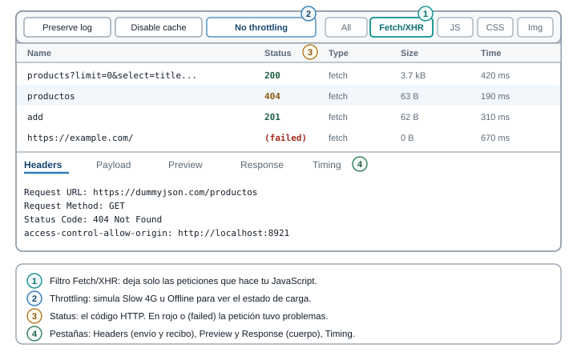
- Abre DevTools (F12), pestaña Network. Marca Preserve log para conservar la lista al recargar y deja visible la cuadrícula de peticiones.
- Filtra con Fetch/XHR para ver solo las peticiones de tu JavaScript y no las hojas de estilo ni las imágenes.
- Recarga la página (F5) y la lista se llena. Cada fila es una petición, con columnas Name, Status, Type, Size y Time.
- Haz clic en una fila. A la derecha se abre el detalle, con estas pestañas:
| Pestaña | Qué muestra | Para qué sirve |
|---|---|---|
| Headers | URL, método, estado, y los encabezados de la petición y de la respuesta | Confirmar la URL exacta y el Content-Type; ver si hay Authorization |
| Payload | Lo que enviaste en el cuerpo o en el query string | Verificar que un POST lleva el JSON que crees |
| Preview | El cuerpo ya interpretado, con JSON desplegable | Explorar la forma de la respuesta |
| Response | El cuerpo tal como llegó, en texto | Ver si llegó HTML en lugar de JSON |
| Timing | Cuánto tardó cada fase | Saber si lo lento es la espera del servidor o la descarga |
Throttling: probar con mala conexión
El menú No throttling de la parte superior del panel simula conexiones lentas (Slow 4G) o ninguna conexión (Offline). Es la forma de ver tus estados de carga y de error sin esperar a que la red falle sola. Con Slow 4G, el estado “Cargando…” de tu panel se ve durante más de un instante; con Offline, la petición falla de inmediato y debes ver el estado de error con su botón de reintento. Una advertencia: Offline también bloquea la recarga de páginas localhost; actívalo después de cargar la página y pulsa Reintentar desde la interfaz, no con F5.
Otras opciones útiles del panel: Disable cache (no usar la caché del navegador, para ver siempre la respuesta completa; al recargar con caché, a veces verás 304 Not Modified, que significa “lo que tienes sigue vigente”) y Block request URL (clic derecho sobre una petición) para simular que una dirección concreta deja de responder.
Método de diagnóstico: cuatro pasos
Cuando algo falla, sigue siempre el mismo orden. Es más rápido que improvisar:
- Reproducir. Provoca el fallo de forma repetible. Si no lo repites, no sabes si lo arreglaste.
- Aislar. Decide en qué tramo está: ¿la petición ni siquiera salió?, ¿salió y el servidor respondió mal?, ¿respondió bien y tu código lo procesó mal? Network responde las dos primeras preguntas; la consola, la tercera.
- Formular una hipótesis. “El estado es 404, así que la URL está mal escrita.” Una hipótesis concreta, que se pueda confirmar o descartar.
- Comprobar con DevTools. Mira el dato que la confirma o la contradice (la URL en Headers, el cuerpo en Response). Cambia una cosa y repite.
Tabla de diagnóstico
| Síntoma | Dónde mirar | Causa más probable | Qué hacer |
|---|---|---|---|
| Estado 404 | Headers: Request URL | La ruta está mal escrita o el recurso no existe | Compara la URL con la documentación, letra por letra |
| Estado 401 | Headers: Request Headers; Response: el mensaje | Falta el encabezado Authorization o el token venció |
Revisa cómo se obtiene y envía el token (con dummyjson.com/auth/me el cuerpo dice Access Token is required) |
| Estado 400 | Payload y Response | Lo que enviaste no cumple lo que el servidor espera | Compara tu cuerpo con el contrato; revisa Content-Type |
| Estado 5xx | Response | Falla del servidor | Reintenta más tarde; si es tu backend, mira sus registros |
Fila roja o (failed), sin Response, y un mensaje de CORS en Console |
Console | El servidor no autoriza tu origen | La solución es del lado del servidor (Parte 8) |
Failed to fetch y ningún mensaje de CORS |
Network: ¿hay petición?; barra de red | Sin conexión, dominio inexistente, servidor apagado | Revisa la conexión y la URL base |
Unexpected token '<' |
Response | Llegó HTML (página de error o ruta equivocada) en lugar de JSON | Corrige la URL; revisa que la ruta devuelva JSON |
| Estado 200 pero la interfaz sigue vacía | Preview | La forma del JSON no es la que esperabas (products frente a data) |
Ajusta el adaptador |
| La petición nunca sale | Network vacío para esa petición; Console | Error de JavaScript antes del fetch, o el código no se ejecuta |
Mira el primer error en Console; revisa si la función se llama |
| Se queda en “Cargando…” sin terminar | Network: fila en estado (pending) |
No hay tiempo máximo y el servidor no responde | Agrega AbortSignal.timeout |
Una pista especial sobre “la petición nunca sale”: si en Network no aparece ni una fila, el problema está en tu código. Un error de sintaxis, un import que falla (por ejemplo, abrir un módulo desde file://) o una función que nunca se llama. La consola tendrá el error rojo correspondiente.
Escribe, para cada observación, la hipótesis y el siguiente paso:
- Network muestra una fila
products?limit=0con estado200, pero la pestaña Preview muestra{ "items": [...] }y tu código leedatos.products. - Network muestra una fila con estado
404cuando pideshttps://dummyjson.com/product/1. - Pulsas “Reintentar”, en la consola aparece
ReferenceError: obtenerCatalogo is not definedy en Network no hay ninguna fila nueva.
- Hipótesis: la API usa otra clave para la lista (
itemsen vez deproducts). La petición funcionó; el problema está en cómo tu código lee la respuesta. Siguiente paso: ajustar la lectura (en el taller, enapi.js) y validar que exista antes de usarla. - Hipótesis: la ruta está mal escrita. Falta una
s: la ruta correcta es/products/1. Siguiente paso: corregir y repetir. - Hipótesis: el código falló antes de llegar al
fetch: a la función le falta unimporto no está definida. Network no registró nada porque la petición nunca salió. Siguiente paso: leer el primer error rojo de la consola, con su archivo y número de línea, y corregir elimport.
Conexión con el proyecto
En el taller, cada falla que provoques (ruta inexistente, offline, una petición bloqueada) la verás en Network antes de verla en la interfaz. Esa costumbre, mirar primero la red y después el código, es la que más tiempo ahorra cuando el backend propio del proyecto empiece a fallar.
12 Parte 11. Taller: el panel del productor consume una API
El problema
Es el momento de juntar todo. El panel del productor de tu proyecto deja de mostrar productos escritos a mano y muestra el catálogo que le entrega una API: nombre, precio en pesos colombianos, cantidad y categoría. Debe cargar sin congelar la página, decir qué pasó cuando falla, dejar reintentar, buscar sin pedir de nuevo los datos y mostrar como agotado el producto sin cantidad (RN-03).
La API entrega title, price (en dólares), stock y category. Tu proyecto habla de nombre, precioCOP, cantidad y categoria. Si pintas directamente lo que entrega la API, ¿qué pasa el día que cambies la API por tu backend ASP.NET, que quizá devuelva nombre y precio? ¿Dónde conviene hacer la traducción?
Si cada parte de tu código usa title y stock, tendrás que cambiar todos esos sitios cuando la API cambie. La traducción conviene en un solo lugar, una capa que habla con la API y entrega al resto del panel objetos con la forma del proyecto. Esa capa es el archivo api.js. El resto del panel nunca sabrá cómo se llamaban los campos originales.
Modelo mental: una capa que aísla
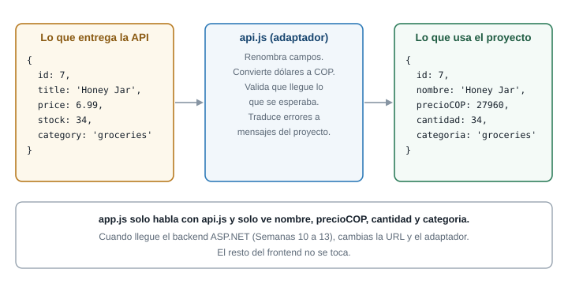
El panel tendrá cuatro archivos con responsabilidades separadas:
| Archivo | Responsabilidad |
|---|---|
index.html |
La estructura: filtros, zona de estado, lista, formulario |
estilos.css |
La apariencia |
api.js |
Hablar con la API: pedir, revisar errores, reintentar, traducir los datos |
app.js |
La interfaz: estado, render, eventos. No sabe nada de HTTP |
Eso significa que app.js no contiene un solo fetch. Cuando llegue tu backend, cambiarás api.js y dejarás app.js intacto.
La API de práctica es https://dummyjson.com: gratuita, sin llave, con CORS habilitado. Se verificó con peticiones reales antes de escribir esta guía: GET /products responde 200 con Access-Control-Allow-Origin, y el catálogo completo tiene 194 productos, de los cuales cuatro tienen stock en cero. Esos cuatro son los que servirán para ver RN-03 en acción.
Los precios vienen en dólares y los nombres en inglés. En el taller se convierte con una tasa fija de 4000 pesos por dólar, solo para la práctica; no es un dato real ni se actualiza. Para tu proyecto real, tus productos serán los de tu dominio y el precio ya estará en pesos.
1 Crea la carpeta y sirve el proyecto
Crea una carpeta, por ejemplo panel-api, con estos cuatro archivos vacíos: index.html, estilos.css, api.js y app.js. Ábrela en VS Code y sirve la carpeta con Live Server o con python -m http.server 8921 (ver el recuadro Antes de empezar). Comprueba en el navegador que http://localhost:8921 carga (aunque la página aún esté vacía).
Escribe index.html:
<!DOCTYPE html>
<html lang="es">
<head>
<meta charset="UTF-8">
<meta name="viewport" content="width=device-width, initial-scale=1.0">
<title>Panel del productor</title>
<link rel="icon" href="data:,">
<link rel="stylesheet" href="estilos.css">
</head>
<body>
<main class="panel">
<header class="encabezado">
<h1>Mi catálogo</h1>
<p id="resumen" aria-live="polite"></p>
</header>
<section class="controles" aria-label="Filtros del catálogo">
<label>Buscar
<input id="buscar" type="search" placeholder="Nombre del producto">
</label>
<label>Categoría
<select id="categoria"><option value="">Todas</option></select>
</label>
<label class="casilla">
<input id="soloAgotados" type="checkbox"> Solo agotados
</label>
</section>
<section id="estado" class="estado" aria-live="polite" hidden></section>
<section id="lista" class="lista"></section>
<form id="formNuevo" class="nuevo" novalidate>
<h2>Publicar producto</h2>
<label>Nombre <input name="nombre" required></label>
<label>Precio (COP) <input name="precio" type="number" min="0" step="100"></label>
<label>Cantidad <input name="cantidad" type="number" min="0" step="1"></label>
<button type="submit">Publicar</button>
<p id="mensajeForm" aria-live="polite"></p>
</form>
</main>
<script type="module" src="app.js"></script>
</body>
</html>Cuatro decisiones del HTML que conviene entender:
<link rel="icon" href="data:,">evita que el navegador pida/favicon.ico, que no existe en tu carpeta y llenaría la consola de un404que no es un error de tu código.<section id="estado" ... hidden>es la zona de estado: ahí aparecerán “Cargando…”, el error y el mensaje de vacío.aria-live="polite"hace que un lector de pantalla anuncie los cambios.<section id="lista">es donde se pintarán las tarjetas.<script type="module">cargaapp.jscomo módulo, lo que permite usarimportyexportentre archivos. Los módulos exigen un servidor, por eso no funcionan confile://.
Escribe estilos.css:
:root { --borde: #c9d3dd; --texto: #16202b; --suave: #5b6876; --azul: #17456f; --rojo: #a32d22; }
* { box-sizing: border-box; }
body { margin: 0; font-family: system-ui, sans-serif; color: var(--texto); background: #f6f8fa; }
.panel { max-width: 960px; margin: 0 auto; padding: 1rem; }
.encabezado { display: flex; justify-content: space-between; align-items: baseline; flex-wrap: wrap; gap: .5rem; }
.controles { display: flex; flex-wrap: wrap; gap: 1rem; align-items: end; margin: 1rem 0; }
.controles label, .nuevo label { display: grid; gap: .25rem; font-size: .9rem; }
.controles .casilla { display: flex; align-items: center; gap: .5rem; }
input, select, button { font: inherit; padding: .45rem .6rem; border: 1px solid var(--borde); border-radius: 6px; }
button { background: var(--azul); color: #fff; border-color: var(--azul); cursor: pointer; }
.estado { padding: 1rem; border: 1px solid var(--borde); border-radius: 8px; background: #fff; }
.estado.error { border-color: var(--rojo); background: #fdf3f2; }
.lista { display: grid; grid-template-columns: 1fr; gap: .75rem; margin-top: .75rem; }
@media (min-width: 640px) { .lista { grid-template-columns: repeat(3, 1fr); } }
.tarjeta { background: #fff; border: 1px solid var(--borde); border-radius: 8px; padding: .75rem; }
.tarjeta h3 { margin: 0 0 .25rem; font-size: 1rem; }
.tarjeta p { margin: .15rem 0; color: var(--suave); font-size: .9rem; }
.tarjeta.agotado { opacity: .75; }
.etiqueta { display: inline-block; padding: .1rem .5rem; border-radius: 999px; font-size: .75rem; background: #fdf3f2; color: var(--rojo); border: 1px solid var(--rojo); }
.nuevo { display: grid; gap: .75rem; max-width: 360px; margin-top: 2rem; }El CSS es el de las semanas anteriores: una columna en teléfono (grid-template-columns: 1fr) y tres a partir de 640 px, con la misma estrategia mobile-first que ya conoces. Si tu proyecto usa Bootstrap o Tailwind, puedes reemplazar este archivo por tus clases; la parte de JavaScript no cambia.
2 Escribe la capa api.js
Empieza con las constantes, el error propio y la función que pide y revisa, que son las que viste en la Parte 7:
const URL_BASE = "https://dummyjson.com";
const TASA_COP = 4000; // tasa fija solo para la práctica: la API devuelve dólares
const TIEMPO_MAXIMO_MS = 8000;
export class ErrorApi extends Error {
constructor(mensaje, tipo, estado = null) {
super(mensaje);
this.name = "ErrorApi";
this.tipo = tipo; // "red" | "tiempo" | "http" | "formato"
this.estado = estado;
}
}
async function pedirJSON(ruta, opciones = {}) {
let respuesta;
try {
respuesta = await fetch(URL_BASE + ruta, {
...opciones,
signal: AbortSignal.timeout(TIEMPO_MAXIMO_MS),
});
} catch (error) {
if (error.name === "TimeoutError") {
throw new ErrorApi("La API tardó demasiado en responder.", "tiempo");
}
throw new ErrorApi("No hay conexión con el servidor.", "red");
}
if (!respuesta.ok) {
throw new ErrorApi(`El servidor respondió ${respuesta.status}.`, "http", respuesta.status);
}
try {
return await respuesta.json();
} catch {
throw new ErrorApi("La respuesta no es un JSON válido.", "formato");
}
}Observa que solo ErrorApi lleva export: es lo único que app.js necesitaría ver para reconocer un error de esta capa. pedirJSON queda privada del módulo: nadie fuera de api.js hace un fetch.
Agrega a continuación el adaptador, la pieza que traduce:
function adaptarProducto(p) {
return {
id: p.id,
nombre: p.title,
precioCOP: Math.round(p.price * TASA_COP),
cantidad: p.stock,
categoria: p.category,
};
}adaptarProducto recibe un producto con la forma de la API y devuelve uno con la forma del proyecto. Math.round evita decimales de peso (por ejemplo, un precio de 9.99 dólares se vuelve 39960 pesos, no 39960.0000001). Es la única función que conoce las dos formas.
Después, la función de reintento de la Parte 7 y las dos funciones públicas del módulo:
const esperar = (ms) => new Promise((resolver) => setTimeout(resolver, ms));
async function conReintentos(tarea, intentos = 3, esperaBaseMs = 500) {
for (let n = 1; n <= intentos; n++) {
try {
return await tarea();
} catch (error) {
const sePuedeReintentar =
error.tipo === "red" ||
error.tipo === "tiempo" ||
(error.tipo === "http" && error.estado >= 500);
if (!sePuedeReintentar || n === intentos) throw error;
const espera = esperaBaseMs * 2 ** (n - 1);
console.warn(`Intento ${n} falló (${error.message}) Reintento en ${espera} ms.`);
await esperar(espera);
}
}
}
export async function obtenerCatalogo(ruta = "/products?limit=0&select=title,price,stock,category") {
const datos = await conReintentos(() => pedirJSON(ruta));
if (!Array.isArray(datos.products)) {
throw new ErrorApi("La respuesta no trae la lista de productos.", "formato");
}
return datos.products.map(adaptarProducto);
}
export async function publicarProducto({ nombre, precioCOP, cantidad }) {
const cuerpo = { title: nombre, price: precioCOP / TASA_COP, stock: cantidad };
const creado = await pedirJSON("/products/add", {
method: "POST",
headers: { "Content-Type": "application/json" },
body: JSON.stringify(cuerpo),
});
return adaptarProducto({ ...cuerpo, id: creado.id, category: "sin-categoria" });
}obtenerCatalogopide todos los productos conlimit=0y solo los cuatro campos que el panel necesita (select=...), lo que reduce la respuesta sin comprimir de unos 300 kB a unos 17 kB. Recibe la ruta como parámetro con un valor por defecto, para poder probar rutas distintas desde la consola.- Envuelve la petición en
conReintentos: un fallo de red o un5xxse reintenta; un404no. Array.isArray(datos.products)valida la forma antes de usarla. Si la API cambiara y devolviera otra clave, el error sería unErrorApide tipoformato, claro y atendible, y no unCannot read properties of undefineden medio delrender.publicarProductohace el camino inverso al adaptador: convierte los pesos a dólares para enviarle a la API lo que espera, conPOST, el encabezado de contenido y el cuerpo en JSON. Devuelve el producto ya con la forma del proyecto, con elidque asignó el servidor.- Los productos publicados no tienen categoría en esta API de práctica, por eso se les asigna el valor
"sin-categoria".
3 Escribe el estado y el render en app.js
Primero el estado, los atajos y el filtrado:
import { obtenerCatalogo, publicarProducto } from "./api.js";
const estado = {
fase: "cargando", // "cargando" | "error" | "listo"
productos: [],
error: null,
busqueda: "",
categoria: "",
soloAgotados: false,
};
const $ = (id) => document.getElementById(id);
const pesos = new Intl.NumberFormat("es-CO", {
style: "currency",
currency: "COP",
maximumFractionDigits: 0,
});
function productosVisibles() {
const texto = estado.busqueda.trim().toLowerCase();
return estado.productos.filter(
(p) =>
p.nombre.toLowerCase().includes(texto) &&
(estado.categoria === "" || p.categoria === estado.categoria) &&
(!estado.soloAgotados || p.cantidad === 0)
);
}import { ... } from "./api.js"trae las dos funciones públicas. La ruta lleva./porque es relativa a este archivo.estadoes la única fuente de verdad: la interfaz se dibuja a partir de este objeto. Tiene tres fases (cargando,error,listo), los datos, el error actual y los tres filtros.$es solo un nombre corto paradocument.getElementById.Intl.NumberFormat("es-CO", ...)formatea los pesos con el punto de miles de Colombia (39960se muestra como$ 39.960). Es una herramienta del propio navegador, sin librerías.productosVisiblesaplica los tres filtros sobre los datos que ya están en memoria, con elfilterde la Semana 7. Los tres se combinan con&&: un producto debe cumplir todos.
Ahora la función que crea una tarjeta, con la regla RN-03:
function crearTarjeta(p) {
const tarjeta = document.createElement("article");
tarjeta.className = "tarjeta" + (p.cantidad === 0 ? " agotado" : "");
const titulo = document.createElement("h3");
titulo.textContent = p.nombre;
const precio = document.createElement("p");
precio.textContent = pesos.format(p.precioCOP);
const cantidad = document.createElement("p");
cantidad.textContent = `Disponible: ${p.cantidad}`;
const categoria = document.createElement("p");
categoria.textContent = p.categoria;
tarjeta.append(titulo, precio, cantidad, categoria);
if (p.cantidad === 0) {
const etiqueta = document.createElement("span");
etiqueta.className = "etiqueta";
etiqueta.textContent = "Agotado";
tarjeta.append(etiqueta);
}
return tarjeta;
}- Cada texto se asigna con
textContent: lo que venga de la API nunca se interpreta como HTML (Parte 9). - La regla RN-03 son dos líneas:
p.cantidad === 0agrega la claseagotado(atenúa la tarjeta) y una etiqueta visible “Agotado”. El producto no se oculta: se muestra, como pide la regla. - La etiqueta es texto, no solo color: la persona la lee aunque no distinga colores (requisito de accesibilidad del proyecto).
4 Los cuatro estados en render
function render() {
const caja = $("estado");
const lista = $("lista");
lista.replaceChildren();
caja.hidden = false;
caja.className = "estado";
if (estado.fase === "cargando") {
caja.textContent = "Cargando catálogo...";
return;
}
if (estado.fase === "error") {
caja.className = "estado error";
caja.replaceChildren();
const mensaje = document.createElement("p");
mensaje.textContent = `No se pudo cargar el catálogo. ${estado.error.message}`;
const boton = document.createElement("button");
boton.type = "button";
boton.textContent = "Reintentar";
boton.addEventListener("click", cargar);
caja.append(mensaje, boton);
return;
}
const visibles = productosVisibles();
$("resumen").textContent = `${visibles.length} de ${estado.productos.length} productos`;
if (visibles.length === 0) {
caja.textContent =
estado.productos.length === 0
? "Todavía no tienes productos publicados."
: "Ningún producto coincide con los filtros.";
return;
}
caja.hidden = true;
lista.append(...visibles.map(crearTarjeta));
}render empieza limpiando (la lista y la zona de estado) y luego decide, por estado.fase, qué dibujar. Cada rama termina en return para que solo se dibuje un estado:
- Cargando: un mensaje en la zona de estado.
- Error: el mensaje del error y un botón Reintentar que vuelve a llamar a
cargar. El mensaje sale deestado.error.message, que es el texto en español que armóapi.js. - Vacío: la fase es
listo, pero no hay nada que mostrar. Se distinguen dos mensajes: no hay productos, o los hay pero los filtros no dejan ninguno. - Éxito: se oculta la zona de estado y se agregan las tarjetas con
append(...visibles.map(crearTarjeta)).
5 Cargar, y conectar los filtros
function llenarCategorias() {
const nombres = [...new Set(estado.productos.map((p) => p.categoria))].sort();
$("categoria").replaceChildren(new Option("Todas", ""), ...nombres.map((n) => new Option(n, n)));
}
async function cargar() {
estado.fase = "cargando";
render();
try {
estado.productos = await obtenerCatalogo();
estado.fase = "listo";
llenarCategorias();
} catch (error) {
estado.fase = "error";
estado.error = error;
console.error(error);
}
render();
}
$("buscar").addEventListener("input", (e) => {
estado.busqueda = e.target.value;
render();
});
$("categoria").addEventListener("change", (e) => {
estado.categoria = e.target.value;
render();
});
$("soloAgotados").addEventListener("change", (e) => {
estado.soloAgotados = e.target.checked;
render();
});cargar es el corazón del panel. Sigue exactamente la secuencia de la Parte 7:
- Cambia la fase a
cargandoy dibuja ese estado: la persona ya ve el aviso. - En el
try, espera el catálogo. Mientras tanto, el hilo está libre. - Si llega, guarda los productos y pasa a
listo. - Si falla, guarda el error, pasa a
errory lo deja en consola para quien depure. - En ambos casos, vuelve a dibujar.
llenarCategorias toma las categorías de los productos (new Set elimina repetidas y sort las ordena) y llena el menú desplegable. Los tres escuchadores solo hacen dos cosas: actualizar el estado y volver a llamar a render. Ninguno hace una petición: la búsqueda, el filtro por categoría y el de “solo agotados” trabajan con lo que ya está en memoria.
6 Publica un producto con POST
$("formNuevo").addEventListener("submit", async (evento) => {
evento.preventDefault();
const datos = new FormData(evento.target);
const nombre = String(datos.get("nombre")).trim();
const precio = datos.get("precio");
const cantidad = datos.get("cantidad");
const mensaje = $("mensajeForm");
// RN-01: sin precio y sin cantidad no se publica
if (nombre === "" || precio === "" || cantidad === "") {
mensaje.textContent = "Completa nombre, precio y cantidad antes de publicar.";
return;
}
try {
mensaje.textContent = "Publicando...";
const nuevo = await publicarProducto({
nombre,
precioCOP: Number(precio),
cantidad: Number(cantidad),
});
estado.productos.unshift(nuevo);
llenarCategorias();
render();
mensaje.textContent = `Publicado: ${nuevo.nombre}.`;
evento.target.reset();
} catch (error) {
mensaje.textContent = `No se pudo publicar. ${error.message}`;
}
});
cargar();evento.preventDefault()evita que el formulario recargue la página.FormDatalee los campos por su atributoname. Los valores de un campo numérico llegan como texto, y por eso se convierten conNumber(...).- La validación de RN-01 va antes de la petición: si faltan datos, ni siquiera se llama a la API. Por eso el campo
cantidadcon valor0sí es válido ("0"no es una cadena vacía): un producto sin cantidad se puede publicar, y se mostrará agotado. - Al terminar bien, el producto nuevo se agrega al comienzo de la lista con
unshifty se vuelve a dibujar. Como la API de práctica no guarda nada, si recargas la página el producto desaparece. - La última línea,
cargar(), arranca todo al abrir la página.
Abre http://localhost:8921. Deberías ver “Cargando catálogo…” un instante y después las tarjetas, con el resumen 194 de 194 productos y la consola sin errores.
7 Provoca cada falla y míralas en Network
Un panel que solo viste funcionando no está probado. Provoca cada caso y comprueba primero en Network y después en la interfaz:
| Prueba | Cómo la provocas | Qué debes ver |
|---|---|---|
| Éxito | Recarga con la conexión normal | Una fila products?limit=0... con estado 200, tipo fetch. Las tarjetas aparecen |
| Cargando | En Network elige Slow 4G y recarga | El mensaje “Cargando catálogo…” se queda visible un buen rato |
| Sin conexión | Con la página ya cargada, pon Offline. Desde la consola: import("./api.js").then(m => m.obtenerCatalogo()) |
Failed to fetch, dos avisos de reintento y, tras unos 1,5 s, un ErrorApi de tipo red |
| Error 5xx | En la consola: import("./api.js").then(m => m.obtenerCatalogo("/http/503")) |
Tres filas 503 en Network, dos reintentos con espera creciente y un ErrorApi de tipo http |
| Ruta inexistente | import("./api.js").then(m => m.obtenerCatalogo("/productos")) |
Una sola fila 404 (no se reintenta) y un ErrorApi de tipo http con estado 404 |
| Forma inesperada | import("./api.js").then(m => m.obtenerCatalogo("/http/200")) |
Estado 200, pero un ErrorApi de tipo formato: la respuesta no trae products |
| Vacío | Escribe zzz en el buscador |
“Ningún producto coincide con los filtros.” y cero filas nuevas en Network |
| RN-03 | Marca “Solo agotados” | Cuatro tarjetas con la etiqueta “Agotado” y cero filas nuevas en Network |
Para ver el estado de error en la interfaz (el mensaje y el botón Reintentar), en Network usa clic derecho sobre la petición products?limit=0..., elige Block request URL y recarga la página: el panel muestra “No se pudo cargar el catálogo. No hay conexión con el servidor.” con su botón. Quita el bloqueo y pulsa Reintentar: las tarjetas aparecen sin recargar.
La búsqueda no hace peticiones: filtra el arreglo en memoria con el filter de la Semana 7. Si en Network ves una petición nueva al escribir, algo se está pidiendo de más. Al probar este taller, escribir phone mostró 8 de 194 productos sin una sola petición adicional.
Código completo de referencia
Si algo no te cuadra, compara tus archivos con estas versiones, que son las que se probaron en un navegador real. La consola no mostró errores al cargar, y los estados de carga, error y vacío se verificaron.
api.js completo
const URL_BASE = "https://dummyjson.com";
const TASA_COP = 4000; // tasa fija solo para la práctica: la API devuelve dólares
const TIEMPO_MAXIMO_MS = 8000;
export class ErrorApi extends Error {
constructor(mensaje, tipo, estado = null) {
super(mensaje);
this.name = "ErrorApi";
this.tipo = tipo; // "red" | "tiempo" | "http" | "formato"
this.estado = estado;
}
}
async function pedirJSON(ruta, opciones = {}) {
let respuesta;
try {
respuesta = await fetch(URL_BASE + ruta, {
...opciones,
signal: AbortSignal.timeout(TIEMPO_MAXIMO_MS),
});
} catch (error) {
if (error.name === "TimeoutError") {
throw new ErrorApi("La API tardó demasiado en responder.", "tiempo");
}
throw new ErrorApi("No hay conexión con el servidor.", "red");
}
if (!respuesta.ok) {
throw new ErrorApi(`El servidor respondió ${respuesta.status}.`, "http", respuesta.status);
}
try {
return await respuesta.json();
} catch {
throw new ErrorApi("La respuesta no es un JSON válido.", "formato");
}
}
const esperar = (ms) => new Promise((resolver) => setTimeout(resolver, ms));
async function conReintentos(tarea, intentos = 3, esperaBaseMs = 500) {
for (let n = 1; n <= intentos; n++) {
try {
return await tarea();
} catch (error) {
const sePuedeReintentar =
error.tipo === "red" ||
error.tipo === "tiempo" ||
(error.tipo === "http" && error.estado >= 500);
if (!sePuedeReintentar || n === intentos) throw error;
const espera = esperaBaseMs * 2 ** (n - 1);
console.warn(`Intento ${n} falló (${error.message}) Reintento en ${espera} ms.`);
await esperar(espera);
}
}
}
function adaptarProducto(p) {
return {
id: p.id,
nombre: p.title,
precioCOP: Math.round(p.price * TASA_COP),
cantidad: p.stock,
categoria: p.category,
};
}
export async function obtenerCatalogo(ruta = "/products?limit=0&select=title,price,stock,category") {
const datos = await conReintentos(() => pedirJSON(ruta));
if (!Array.isArray(datos.products)) {
throw new ErrorApi("La respuesta no trae la lista de productos.", "formato");
}
return datos.products.map(adaptarProducto);
}
export async function publicarProducto({ nombre, precioCOP, cantidad }) {
const cuerpo = { title: nombre, price: precioCOP / TASA_COP, stock: cantidad };
const creado = await pedirJSON("/products/add", {
method: "POST",
headers: { "Content-Type": "application/json" },
body: JSON.stringify(cuerpo),
});
return adaptarProducto({ ...cuerpo, id: creado.id, category: "sin-categoria" });
}app.js completo
import { obtenerCatalogo, publicarProducto } from "./api.js";
const estado = {
fase: "cargando", // "cargando" | "error" | "listo"
productos: [],
error: null,
busqueda: "",
categoria: "",
soloAgotados: false,
};
const $ = (id) => document.getElementById(id);
const pesos = new Intl.NumberFormat("es-CO", {
style: "currency",
currency: "COP",
maximumFractionDigits: 0,
});
function productosVisibles() {
const texto = estado.busqueda.trim().toLowerCase();
return estado.productos.filter(
(p) =>
p.nombre.toLowerCase().includes(texto) &&
(estado.categoria === "" || p.categoria === estado.categoria) &&
(!estado.soloAgotados || p.cantidad === 0)
);
}
function crearTarjeta(p) {
const tarjeta = document.createElement("article");
tarjeta.className = "tarjeta" + (p.cantidad === 0 ? " agotado" : "");
const titulo = document.createElement("h3");
titulo.textContent = p.nombre;
const precio = document.createElement("p");
precio.textContent = pesos.format(p.precioCOP);
const cantidad = document.createElement("p");
cantidad.textContent = `Disponible: ${p.cantidad}`;
const categoria = document.createElement("p");
categoria.textContent = p.categoria;
tarjeta.append(titulo, precio, cantidad, categoria);
if (p.cantidad === 0) {
const etiqueta = document.createElement("span");
etiqueta.className = "etiqueta";
etiqueta.textContent = "Agotado";
tarjeta.append(etiqueta);
}
return tarjeta;
}
function render() {
const caja = $("estado");
const lista = $("lista");
lista.replaceChildren();
caja.hidden = false;
caja.className = "estado";
if (estado.fase === "cargando") {
caja.textContent = "Cargando catálogo...";
return;
}
if (estado.fase === "error") {
caja.className = "estado error";
caja.replaceChildren();
const mensaje = document.createElement("p");
mensaje.textContent = `No se pudo cargar el catálogo. ${estado.error.message}`;
const boton = document.createElement("button");
boton.type = "button";
boton.textContent = "Reintentar";
boton.addEventListener("click", cargar);
caja.append(mensaje, boton);
return;
}
const visibles = productosVisibles();
$("resumen").textContent = `${visibles.length} de ${estado.productos.length} productos`;
if (visibles.length === 0) {
caja.textContent =
estado.productos.length === 0
? "Todavía no tienes productos publicados."
: "Ningún producto coincide con los filtros.";
return;
}
caja.hidden = true;
lista.append(...visibles.map(crearTarjeta));
}
function llenarCategorias() {
const nombres = [...new Set(estado.productos.map((p) => p.categoria))].sort();
$("categoria").replaceChildren(new Option("Todas", ""), ...nombres.map((n) => new Option(n, n)));
}
async function cargar() {
estado.fase = "cargando";
render();
try {
estado.productos = await obtenerCatalogo();
estado.fase = "listo";
llenarCategorias();
} catch (error) {
estado.fase = "error";
estado.error = error;
console.error(error);
}
render();
}
$("buscar").addEventListener("input", (e) => {
estado.busqueda = e.target.value;
render();
});
$("categoria").addEventListener("change", (e) => {
estado.categoria = e.target.value;
render();
});
$("soloAgotados").addEventListener("change", (e) => {
estado.soloAgotados = e.target.checked;
render();
});
$("formNuevo").addEventListener("submit", async (evento) => {
evento.preventDefault();
const datos = new FormData(evento.target);
const nombre = String(datos.get("nombre")).trim();
const precio = datos.get("precio");
const cantidad = datos.get("cantidad");
const mensaje = $("mensajeForm");
// RN-01: sin precio y sin cantidad no se publica
if (nombre === "" || precio === "" || cantidad === "") {
mensaje.textContent = "Completa nombre, precio y cantidad antes de publicar.";
return;
}
try {
mensaje.textContent = "Publicando...";
const nuevo = await publicarProducto({
nombre,
precioCOP: Number(precio),
cantidad: Number(cantidad),
});
estado.productos.unshift(nuevo);
llenarCategorias();
render();
mensaje.textContent = `Publicado: ${nuevo.nombre}.`;
evento.target.reset();
} catch (error) {
mensaje.textContent = `No se pudo publicar. ${error.message}`;
}
});
cargar();Retos del taller
Imagina que tu backend deja de enviar category. Cambia solo api.js para que el panel siga funcionando sin una categoría real: todos los productos deben quedar con la categoría "sin-categoria". ¿Cuántos archivos tuviste que tocar?
En adaptarProducto, cambia categoria: p.category por categoria: p.category ?? "sin-categoria". El operador ?? usa el valor de la derecha cuando el de la izquierda es null o undefined. Solo tocaste un archivo: app.js sigue leyendo p.categoria sin enterarse de nada. Esa es la ganancia de la capa de adaptación.
Agrega al panel una etiqueta amarilla “Quedan pocas unidades” para los productos con cantidad entre 1 y 5. ¿En qué archivo está la regla y por qué ahí?
En crearTarjeta de app.js, junto a la regla de agotado:
if (p.cantidad > 0 && p.cantidad <= 5) {
const aviso = document.createElement("span");
aviso.className = "etiqueta";
aviso.textContent = "Quedan pocas unidades";
tarjeta.append(aviso);
}Va en app.js porque es una decisión de presentación: cómo se muestra un dato que ya llegó. api.js solo traduce y entrega datos. Si el umbral de 5 pasara a ser una regla del negocio que valida el backend, vendría desde allá.
Conexión con el proyecto
Lo que acabas de construir es el panel del productor de tu proyecto, con una API pública en lugar del backend. Reemplaza los productos de ejemplo por los de tu dominio, mantén la separación entre api.js y app.js, y conserva los cuatro estados. En las Semanas 10 a 13 cambiarás la URL base y el adaptador; el resto de tu panel seguirá en pie.
13 Lo que debes poder explicar
Al terminar la semana deberías poder explicar, con tus palabras y sin mirar la guía:
- Qué viaja en una petición y en una respuesta HTTP, y qué dice cada familia de códigos de estado.
- Por qué un
404no hace quefetchrechace la promesa, y qué línea lo atiende. - En qué orden se ejecutan lo sincrónico, las microtareas y las tareas, y por qué
setTimeoutcon 0 no corre “ahora”. - Qué hace
awaity qué no hace: pausa la función, no el hilo. - Por qué un error de CORS no se arregla en el frontend.
- Por qué los datos de una API se pintan con
textContent. - En qué orden revisarías Network, Console y tu código cuando una petición falla.
14 Preguntas de comprensión
Responde por escrito antes de abrir cada respuesta. No hay entrega: sirven para encontrar los puntos que todavía no tienes claros.
Un compañero dice: “mi fetch no falló, porque no entró al catch, así que la petición salió bien”. ¿Qué le responderías?
Que fetch solo rechaza cuando no hay respuesta. Un 404 o un 500 cumplen la promesa y no entran al catch. Para saber si salió bien hay que mirar response.ok o response.status, y lanzar un error propio si no es exitoso.
¿En qué orden aparece la salida de este código y por qué?
setTimeout(() => console.log("T"), 0);
Promise.resolve().then(() => console.log("P"));
console.log("S");S, P, T. S es sincrónico y corre primero. P es una microtarea y corre al vaciarse la pila, antes de cualquier tarea. T es una tarea del temporizador y corre después de las microtareas.
¿Por qué este código muestra Promise { <pending> } y no el producto?
const producto = obtenerProducto(1);
console.log(producto);obtenerProducto es una función async, así que devuelve una promesa, y falta await para obtener su valor. Con const producto = await obtenerProducto(1); el resultado sería el producto.
Necesitas pedir los productos 1, 2 y 3, que no dependen unos de otros. ¿Por qué Promise.all es mejor que tres await seguidos, y en qué caso no lo usarías?
Con tres await seguidos, las peticiones se hacen una tras otra y el tiempo total es la suma. Con Promise.all salen a la vez y el tiempo es el de la más lenta. No lo usarías si una petición necesita el resultado de otra, o si quieres el resultado de las que sí funcionaron aunque alguna falle (en ese caso, Promise.allSettled).
Tu panel muestra la pantalla vacía y en Network ves una petición con estado 200 y un cuerpo con datos. ¿Dónde está el problema?
El servidor respondió bien, así que el problema está en cómo tu código lee o pinta la respuesta. Revisa la pestaña Preview para ver la forma real del JSON y compárala con lo que tu código espera (por ejemplo, products frente a items), y mira la consola por errores de JavaScript.
La consola dice blocked by CORS policy: No 'Access-Control-Allow-Origin' header is present. ¿Quién tiene que hacer el cambio para arreglarlo y por qué?
El servidor: es quien decide a qué orígenes autoriza, enviando el encabezado Access-Control-Allow-Origin. El navegador solo hace cumplir esa decisión. Nada que cambies en tu JavaScript puede darte un permiso que el servidor no concedió.
¿Por qué se reintenta una petición GET que falló con 503, pero no una que falló con 404?
Un 503 es un fallo del servidor, que puede ser pasajero y resolverse en segundos. Un 404 indica que la petición misma está mal (la ruta no existe) y repetirla produce el mismo resultado. Reintentar un 4xx solo gasta tiempo y carga al servidor.
Un producto llega con el nombre <b>Oferta</b>. Lo pintas con textContent. ¿Qué ve la persona y por qué es la decisión correcta?
Ve literalmente el texto <b>Oferta</b>, con las etiquetas visibles. Es correcto: el panel no puede saber si ese texto es un formato inocente o código malicioso, y textContent lo trata siempre como texto. Mostrar un nombre extraño es un problema menor frente a ejecutar código ajeno.
15 Recursos
- Presentación interactiva de la sesión: Presentación interactiva de la sesión
- MDN, uso de Fetch: developer.mozilla.org, Using Fetch
- MDN, el bucle de eventos: developer.mozilla.org, Event loop
- MDN, uso de promesas: developer.mozilla.org, Using promises
- MDN, funciones
async: developer.mozilla.org, async function - MDN,
Promise.all: developer.mozilla.org, Promise.all - MDN, introducción a la programación asíncrona: developer.mozilla.org, Introducing asynchronous JavaScript
- MDN, códigos de estado HTTP: developer.mozilla.org, HTTP response status codes
- MDN, CORS: developer.mozilla.org, Cross-Origin Resource Sharing
- MDN,
AbortSignal.timeout(): developer.mozilla.org, AbortSignal.timeout - MDN,
innerHTMLy sus consideraciones de seguridad: developer.mozilla.org, innerHTML - Chrome DevTools, referencia de la pestaña Network: developer.chrome.com, Network reference
- API de práctica del taller: dummyjson.com/docs
Programación Web (IF2003). Institución Universitaria de Envigado. Facultad de Ingenierías. Semestre 2026-02.
Transparencia. La redacción de esta guía contó con el apoyo de inteligencia artificial, usando el modelo Claude Sonnet 5 de Anthropic. Todo el contenido fue revisado y validado.